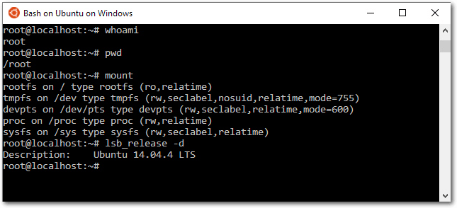

Zur Version ohne Bilder
In dem Artikel werden eine Reihe von Linux-Distributionen vorgestellt, die nicht so bekannt sind wie die klassischen „großen“ Distributionen oder nicht so häufig verwendet werden, weil sie entweder für spezielle Anwendungen oder für einen besonderen Benutzerkreis konzipiert sind. Ziel ist es, diese Distributionen ein bisschen näher kennenzulernen, damit man weiß, was zur Verfügung steht, wenn man einmal etwas ganz bestimmtes braucht. (weiterlesen)
Aus verschiedenen Gründen ist Audacity der beliebteste freie Audio-Editor. Im Internetzeitalter hat man sich daran gewöhnt, dass viele Programme kostenlos verfügbar sind, aber dennoch eine hohe Professionalität aufweisen. In die Riege der besten Open-Source-Werkzeuge reiht sich auch Audacity ein. Ob man nun die Schallplatten- oder Kassettensammlung digitalisieren, Videos nachvertonen oder das eigene Gitarrenspiel oder den Bandauftritt aufnehmen und bearbeiten möchte – all das ist mit Audacity möglich. (weiterlesen)
Zum Inhaltsverzeichnis
Ubuntu unter Windows ausprobiert
Linux-Distributionen im Vergleich – eine etwas andere Auswahl
Der Mai im Kernelrückblick
Anleitungen
Docker im Schuleinsatz
Software
Audacity 2.1 – Teil I
Test: Tomb Raider – Reboot der Serie
Community
Interview mit dem Musiker Daniel Schlep
Rezension: Python for Data Science For Dummies
Rezension: Scratch, Arduino & Raspberry Pi
Magazin
Editorial
Leserbriefe
Veranstaltungen
Vorschau
Konventionen
Impressum
Zum Inhaltsverzeichnis
[1] http://www.freiesmagazin.de/freiesMagazin-2016-05
[2] https://wiki.selfhtml.org/wiki/HTML/Kopfdaten/meta
Beitrag teilen Beitrag kommentieren
Zum Inhaltsverzeichnis
Aktivierung des „Windows Subsystem für Linux“.
Die Kurzfassung:
Download von „Ubuntu on Windows, distributed by Canonical“.
Erste Erkundungen in der Bash.
dpkg -l zeigt, dass standardmäßig beachtliche 437 Ubuntu-Pakete installiert sind, unter anderem: apt, bash, cron, dpkg, nano, openssh-client und -server, openssl, perl, python (Version 2.7 und 3.4), rsync, sed, sudo, tar, upstart und vim. Die Paketverwaltung funktioniert wie in Debian/Ubuntu gewohnt, man kann also problemlos weitere Pakete mit apt-get install installieren. Die sources.list enthält übrigens die ganz gewöhnlichen Ubuntu-Paketquellen, keine speziellen, für Windows optimierte/kompilierte Pakete!
Das Linux-Dateisystem befindet sich im AppData-Verzeichnis des Windows-Nutzers.
Um umgekehrt vom Linux-Subsystem auf das Windows-Dateisystem zuzugreifen, verwendet man das Verzeichnis /mnt/c. Wie die Verbindung hinter den Kulissen funktioniert, ist unklar. Es gibt für das Verzeichnis keinen mount-Eintrag, auch nicht in /etc/fstab. Es ist somit möglich, von Linux aus auf das Windows-Dateisystem zuzugreifen (ggf. mit unbekannten Einschränkungen).
Es ist möglich, in der Bash eine Datei zu erzeugen, die auf dem Windows-Desktop sichtbar ist.
[1] http://www.pro-linux.de/artikel/2/1824/ubuntu-unter-windows-ausprobiert.html
[2] https://channel9.msdn.com/Events/Build/2016/C906
[3] http://blog.dustinkirkland.com/2016/04/howto-ubuntu-on-windows.html
Beitrag teilen Beitrag kommentieren
Zum Inhaltsverzeichnis
Vergleich der Büro-Anwendungen, links DVD, rechts CD
Auf der DVD wird außerdem eine Fülle von Spielen sowie Wine zur Unterstützung von Windows-Software mitgeliefert, was auf der CD nicht enthalten ist. Da wie gesagt Knoppix hauptsächlich zur Datenrettung und Systemwiederherstellung genutzt wird, sollte die CD für diese Nutzung auch ausreichen. Somit eignet sich die DVD zusammenfassend, um Knoppix auf einem Computer fest zu installieren, weil eine Menge an Software bereits vorhanden ist, die bei der Installation von der CD erst nachinstalliert werden müsste. Die CD hat ihre Stärke dagegen gerade darin, dass sie nur eine kleine Auswahl mitbringt, die aber zum Ausprobieren, Reparieren oder Kennenlernen von Knoppix oder von Linux erst einmal ausreichend wäre. Mit nur 700 MB muss so weniger heruntergeladen werden als bei der DVD. Dies kommt Nutzern mit geringer Bandbreite zugute. Um neue Software zu installieren, sind zwei Wege möglich: Zum einen über Synaptic, die grafische Paketverwaltung, und über die Kommandozeile, entweder über apt-get, aptitude (beides vorinstalliert) oder die etwas neuere Variante apt. Eine Besonderheit von Knoppix ist, dass es besonders auf die Bedürfnisse von Anwendern mit Sehschwäche ausgerichtet ist. Deswegen bringt Knoppix nicht nur diverse Werkzeuge für den barrierefreien Zugang zum Web und zum Computer mit, wie einen Screenreader, Bildschirmlupe oder Viacam (Benutzung der Webcam, um die Maus durch die eigene Blickrichtung zu steuern), sondern bringt gleich ein fertig konfiguriertes System, Adriane (erreichbar durch Übergeben der Boot-Option adriane oder indem die Adriane-CD/DVD verwendet wird), mit. Beide Installationsmedien, DVD und CD, richten einen Benutzer mit Standardrechten neben dem root-Benutzer ein, was für viele Nutzer eine Sicherheitsmaßnahme für die Benutzung als Betriebssystem ist. Eine weitere Besonderheit von Knoppix ist, dass beim Booten eine Liste von Parametern übergeben werden kann, die sehr spezifische Einstellungen ermöglichen. So kann beispielsweise der KDE-Desktop oder der GNOME-Desktop verwendet werden, Adriane gestartet werden, Tastaturbelegung und Lokalisierungseinstellungen gesetzt werden und der Kompositor Compiz deaktiviert werden. Viele dieser Parameter funktionieren nur auf der DVD, weil etwa die anderen Desktopumgebungen auf der CD nicht mit ausgeliefert werden, sondern dort nur der Standard-Desktop, LXDE, verfügbar ist.
Das Quick Setup-Menü ermöglicht wichtige Einstellungen beim ersten Start.
Wählt man als Sprache Deutsch, wird man mit einem Hinweistext darauf aufmerksam gemacht, dass möglicherweise Sprachpakete nachinstalliert werden müssen, um Puppy auf Deutsch benutzen zu können. Der Hinweis erklärt ausführlich, wie man diese Pakete nachinstalliert, selbst wenn man Anfänger ist. Wenn man mit seinen Änderungen zufrieden ist, muss gegebenenfalls die grafische Oberfläche neu gestartet werden. Auch für diesen Vorgang wird man bei Puppy angeleitet; ein Klick auf einen entsprechenden Button genügt. Nach dem GUI-Neustart erscheint noch ein Hilfe-Fenster, in dem man weitere Informationen über die Anordnung der Symbole in der Leiste und das Einstellungsmenü erhält. Danach landet man auf dem Desktop und kann loslegen.
Der Desktop von Puppy Linux ist mit Schnellzugriffs-Symbolen ausgestattet.
An Software bringt Puppy eine ganze Menge Anwendungen direkt mit. Wie bei Knoppix ist es für Standardaufgaben zunächst nicht notwendig, weitere Software nachzuinstallieren. Einige Besonderheiten von Puppy sind der verwendete Fenstermanager JWM, der Webbrowser Pale Moon (ein Fork von Firefox) und eine Eigenproduktion (Puppy Package Manager) zur Installation und Verwaltung von Software-Paketen. Außerdem bietet Puppy eine Übersicht über häufig nachinstallierte Software im so genannten „Quickpet“-Eintrag: Hier findet sich eine sehr stark vereinfachte Paketverwaltung, um zum Beispiel Firefox oder Chrome zu installieren. Ein Klick installiert das Paket sofort. Insgesamt merkt man schnell, dass Puppy versucht, den Anwender gezielt an die Hand zu nehmen. Für Erstnutzer ist das recht praktisch, weil man das System auf diese Weise schnell kennenlernt. Für Nutzer, die JWM schon gewöhnt sind oder aus anderen Gründen keine Notwendigkeit verspüren, an die Hand genommen zu werden, sind die Hilfsmittel jedoch auch nicht im Weg. Beim Herunterfahren wird der Nutzer darauf hingewiesen, dass er ein Live-System gestartet hat und deswegen keine Einstellungen gespeichert werden – allerdings bietet Puppy die Möglichkeit, die Sitzung in einer einzigen Datei auf einem beschreibbaren Medium (der Festplatte, einem USB-Stick oder dem Live-Medium, sofern es beschreibbar ist) zu sichern. So werden die Einstellungen, die der Nutzer vorgenommen hat, und persönliche Dateien gespeichert. In Puppy ist dies die zentrale Vorgehensweise – Puppy wird nicht auf der Festplatte installiert, sondern läuft stets im Arbeitsspeicher des Geräts. Installiert man es auf einem USB-Stick und lässt ein wenig Platz für persönliche Dateien, hat man somit sein Betriebssystem und seine wichtigsten Daten immer bei sich und muss kein Gerät dabei haben – Zugang zu einem solchen genügt.
Die Gestaltung des Desktops mit der Leiste erinnert an Windows XP.
Als Startmenü verwendet Vector Linux das alternative WhiskerMenu-Plugin. Dieses wirkt etwas morderner als das klassische Menü von XFCE. An Software sind Firefox als Webbrowser und Claws Mail als Email-Verwaltung installiert. Für Büroanwendungen gibt es das leichtgewichtige AbiWord und Gnumeric. Für Chats sind Hexchat und Pidgin vorhanden. Vector Linux bringt außerdem Geany als IDE und Glade zum Erstellen von GTK+-Anwendungen mit; als Texteditor ist Leafpad vorhanden. Will man andere Software installieren, gibt es dafür eine grafische Anwendung, Gslapt, die an Synaptic erinnert. Das ist auch so vorgesehen, denn das verwendete Paketverwaltungssystem von Vector Linux ist „slapt-get“, das sich an Debians „apt“ anlehnt. Diese Ähnlichkeit sieht man auch unter der Haube: Sieht man sich die Konfiguration von slapt-get auf der Kommandozeile an, werden die Ähnlichkeiten sehr deutlich. Der Hauptunterschied zwischen apt-get und slapt-get ist, dass bei slapt-get die Anweisungen --install o.ä. mit zwei Bindestrichen angegeben werden. Ansonsten sind die von apt-get gewohnten Befehle nutzbar. Daran kann man sich recht gut gewöhnen, wenn man Umsteiger oder Erstnutzer einer Slackware-Distribution ist. Freunde der pkgtools, der unter Slackware sonst üblichen Paketverwaltung, können aber auch diese verwenden. Zum Testen wurden über Gslapt Thunderbird und LibreOffice installiert. Dazu gibt man den entsprechenden Suchbegriff ins Suchfeld ein (oder klickt sich durch die zahlreichen Pakete, wenn man nur schmökern möchte), bestätigt und wählt das gewünschte Paket zur Installation aus. Nachdem man das mit allen Paketen gemacht hat, die man installieren will, klickt man auf „Execute“. Die Installation läuft dann automatisch ab.
[1] http://www.knopper.net/knoppix/
[2] http://puppylinux.com/
[3] http://vectorlinux.com/
[4] https://gentoo.org/
[5] http://www.knoppix.org/
[6] http://www.puppylinux.org/wikka/MinimumSystemRequirements
[7] https://gentoo.org/assets/img/wallpaper/abducted/gentoo-abducted-1600x1200.png
[8] https://packages.gentoo.org/packages/media-video/vlc
Beitrag teilen Beitrag kommentieren
Zum Inhaltsverzeichnis
[1] https://lkml.org/lkml/2016/5/1/191
[2] https://lkml.org/lkml/2016/5/8/122
[3] https://de.wikipedia.org/wiki/Serial_ATA
[4] https://en.wikipedia.org/wiki/ARC_(processor)
[5] https://lkml.org/lkml/2016/5/15/83
[6] https://cds.cern.ch/journal/CERNBulletin/2016/21/News Articles/2152720?ln=en
[7] https://de.wikipedia.org/wiki/Kernel_panic
[8] https://de.wikipedia.org/wiki/DisplayPort
[9] https://de.wikipedia.org/wiki/Virtual_Extensible_LAN
[10] https://de.wikipedia.org/wiki/OrangeFS
[11] https://de.wikipedia.org/wiki/Filesystem_in_Userspace
[12] https://en.wikipedia.org/wiki/Cgroups
[13] http://www.freiesmagazin.de/freiesMagazin-2013-12
[14] https://en.wikipedia.org/wiki/IEEE_802.1AE
[15] http://kernelnewbies.org/Linux_4.6
[16] https://lkml.org/lkml/2016/5/29/77
[17] http://www.telegraph.co.uk/news/2016/05/25/stoned-sheep-go-on-psychotic-rampage-after-eating-cannabis-plant/
Beitrag teilen Beitrag kommentieren
Zum Inhaltsverzeichnis
Zwei Container mit Apache2-Webservern auf den Ports 50180 und 50280.
Docker-Host mit drei Containern.
Nun kann jeder Schüler auf seinem eigenen Linuxrechner arbeiten – inklusive eines Root-Zugangs und eigenen Webservers. Mit dem Aufruf ssh -p 5XX22 root@dockerhost erhält er Zugang zu seinem Container und kann den Webserver über http://dockerhost:5XX80 ansprechen.
[1] https://www.virtualbox.org/
[2] https://www.docker.com/
[3] https://github.com/pintman/scripts/tree/master/docker.exam
Beitrag teilen Beitrag kommentieren
Zum Inhaltsverzeichnis
Eine MPEG 4-Audiodatei mit der Dateierweiterung M4A im Audioeditor.
Ein Effekt kann auf ein markiertes Segment angewendet werden.
Die meisten Effekte stellen ein Konfigurationsmenü zur Verfügung, über welches man die Effekte exakt steuern kann. Es gibt aber auch Effekte wie die Ein- und Ausblend-Effekte, die keinerlei weitere Dialoge besitzen. Bei vielen Effekten, die über Anpassungsmöglichkeiten verfügen, steht eine Preview-Funktion mit einem Klick auf „Vorhören“ zur Verfügung. Mit der Vorhören-Funktion kann man sich einen Eindruck von der Effektanwendung verschaffen. Bei verschiedenen Effekten müssen außerdem bestimmte Voraussetzungen erfüllt sein. Beim Auto-Duck-Effekt müssen beispielsweise zwei Tonspuren ausgewählt sein. Der „Vocal Remover“-Effekt setzt einen Stereo-Track voraus. Ist man mit dem (Zwischen-)Ergebnis der Effektanwendung nicht zufrieden sein, kann man den Effekt natürlich auch wieder rückgängig machen. Dazu führt man den Menübefehl „Bearbeiten -> Rückgängig“ oder die Tastenkombination „Strg“ + „Z“ aus. Bei der Effektanwendung bietet es sich meist an, den Effekt zunächst auf ein kleines Segment anzuwenden, ihn abzuhören und dann gegebenenfalls rückgängig zu machen oder in einer neuen Konfiguration anzuwenden. Man kann die bearbeiteten Abschnitte auch mit speziellen Labeln markieren. Das vereinfacht eine spätere Nachbearbeitung oder Korrektur eines Segments, auf das man einen Effekt angewendet hat. Man kann diese Markierungen auch verwenden, um einen langen Audio-Track in mehrere Segmente zu teilen. Beim Abspielen, Aufnehmen oder Pausieren einer Tonspur ist das „Effekt“-Menü grau hinterlegt und stellt keine Effekte bereit. Man kann Effekte nur auf Tonspuren anwenden, die angehalten wurden.
[1] http://www.audacityteam.org/
[2] https://ffmpeg.org/
Beitrag teilen Beitrag kommentieren
Zum Inhaltsverzeichnis
Lara erleidet Schiffbruch und entkommt nur knapp dem Ende.
Es gibt viele Geheimnisse zu entdecken.
Kämpfe werden zum Beispiel mit Pfeil und Bogen oder verschiedenen Schusswaffen bestritten. Die Gegner verhalten sich hier einigermaßen schlau und nutzen auch hin und wieder Deckungen. Weiterhin versuchen sie, mit Brandgeschossen Laras eigene Deckung zu zerstören. So ist man hin und wieder zu einem kleinen taktischen Rückzug gezwungen. Eher störend sind einige Quicktime-Events, in welchen man schnell bestimmte Tasten drücken muss, um nicht umzukommen. Dies ist vor allem ärgerlich, wenn es mehrere Tasten hintereinander sind und man die Szene noch nicht kennt. So kam es während des Tests einige Male vor, dass Szenen doppelt und dreifach gespielt werden mussten. Die Geschichte des Spiels wird gut erzählt und in vielen Ingame-Zwischensequenzen erzählt. Vor allem der Hauptcharakter ist hier toll designt und zeigt viele Emotionen. Man fiebert ständig mit Lara mit und will unbedingt erfahren, wie es weitergeht.
Es gibt einige kritische Augenblicke für Lara zu überstehen.
[1] https://de.wikipedia.org/wiki/Toby_Gard
[2] https://games4linux.de/test-tomb-raider-reboot-der-serie/
[3] https://store.feralinteractive.com/de/games/tombraider/
Beitrag teilen Beitrag kommentieren
Zum Inhaltsverzeichnis
[1] http://www.danielschlep.de/
[2] http://www.danielschlep.de/[DS] Drum-Studio/
[3] http://www.danielschlep.de/[DS] Daniel Schlep/[DS] Daniel Schlep (Info).pdf
[4] http://www.bookzilla.de/shop/action/productDetails/18357284/daniel_schlep_ds_drum_session_3938967625.html?aUrl=90006951
[5] https://www.jamendo.com/
[6] http://bandcamp.com
[7] http://www.freemusicarchive.org/
Beitrag teilen Beitrag kommentieren
Zum Inhaltsverzeichnis
Links
[1] http://wiley-vch.de/publish/dt/books/ISBN1-118-84418-1/
[2] http://pandas.pydata.org/
[3] http://matplotlib.org/
Beitrag teilen Beitrag kommentieren
Zum Inhaltsverzeichnis
 geschickt werden. Die Kommentare werden bis zum Ende der
Verlosung nicht freigeschaltet. Das Buch wird unter allen
Einsendern, die die Frage richtig beantworten konnten, verlost.
geschickt werden. Die Kommentare werden bis zum Ende der
Verlosung nicht freigeschaltet. Das Buch wird unter allen
Einsendern, die die Frage richtig beantworten konnten, verlost.
Links
[1] https://www.arduino.cc/
[2] https://www.raspberrypi.org/
[3] http://www.oreilly.de/buecher/120011/9783958750319-faszinierende-elektronik-projekte-mit-scratch%2C-raspberry-pi-und-arduino.html
[4] https://scratch.mit.edu/
[5] http://scratch-dach.info/wiki/PicoBoard
Beitrag teilen Beitrag kommentieren
Zum Inhaltsverzeichnis
zur Verfügung - wir freuen uns über Lob,
Kritik und Anregungen zum Magazin.
An dieser Stelle möchten wir alle Leser ausdrücklich ermuntern,
uns auch zu schreiben, was nicht so gut gefällt. Wir bekommen
sehr viel Lob (was uns natürlich freut), aber vor allem durch
Kritik und neue Ideen können wir uns verbessern.
Jakob Moser <- Es ist kein Einzelfall, bisher schrieb uns ein weitere Leser diesbezüglich vor ein paar Wochen an. Wir haben jetzt im Zuge der Umstellung von TTH 3.89 auf 4.08 (wird benutzt, um LaTeX nach HTML zu wandeln), auch die viewport-Zeile eingefügt und hoffen, dass die HTML-Seite nun auf allen Mobilgeräten gut lesbar ist. Wir konnten in der Redaktion auf unseren Geräten seltsamerweise keine Unterschiede feststellen.
Dominik Wagenführ
Daniel Schlep <- Das Thema „Creative Commons“ habe ich in einem Artikel in freiesMagazin 10/2012 erklärt [1]. In knappen Worten zusammengefasst: Sie müssen an/bei dem Inhalt, den Sie veröffentlichen, nur die Lizenz dazuschreiben und schon wird er zu einem freien Kulturgut. Bei Texten schreibt man die Lizenz in der Regel ans Ende, bei Musik und Bildern in die Meta-Information und oft im Text auf der Webseite, wo man den Inhalt anbietet. Bei uns steht die Lizenz im PDF auf jeder Seite und detailliert noch einmal im Impressum. Das reicht völlig aus.
Dominik Wagenführ
Thomas <- Einen PDF-Lieferservice als Abo bieten wir nicht an. Grund ist der Datenschutz der registrierten E-Mailadressen, den wir mit unserer kleinen Mannschaft nicht gewährleisten können – zumindest nicht so, dass er geltendem Recht entspricht. Aus dem Grund haben wir einen RSS-Feed, mit dem man immer über neue Ausgaben informiert wird und mit einem Klick das PDF herunterladen kann [2].
Dominik Wagenführ
bud (Kommentar)
Gast (Kommentar) <- Wenn man hinter den „Trick“ schaut und sich einfach formal nur die Kriterienliste [4] und die zugehörige Auswertung [5] durchliest, ist dies zumindest auch ein Erkenntnisgewinn, aus dem man dann selbst ableiten kann, ob einen der Dienst „sympathisch“ ist und man ihn (weiter) nutzen möchte. Ganz unabhängig davon, welche Note er von irgendeinem Konsortium vergeben bekam.
Dominik Wagenführ
Olaf G. (Kommentar) Links
[1] http://www.freiesmagazin.de/freiesMagazin-2012-10
[2] http://www.freiesmagazin.de/rss.xml
[3] https://www.virtualbox.org/manual/ch03.html#intro-64bitguests
[4] https://www.gnu.org/software/repo-criteria.en.html
[5] https://www.gnu.org/software/repo-criteria-evaluation.html
Die Redaktion behält sich vor, Leserbriefe gegebenenfalls zu kürzen. Redaktionelle Ergänzungen finden sich in eckigen Klammern. Beitrag teilen Beitrag kommentieren
Zum Inhaltsverzeichnis
(Alle Angaben ohne Gewähr!)
Sie kennen eine Linux-Messe, welche noch nicht auf der Liste zu
finden ist? Dann schreiben Sie eine E-Mail mit den Informationen zu
Datum und Ort an .
Zum Inhaltsverzeichnis
Zum Inhaltsverzeichnis
Erscheinungsdatum: 5. Juni 2016
Dieses Magazin wurde mit LaTeX erstellt. Mit vollem Namen
gekennzeichnete Beiträge geben nicht notwendigerweise die Meinung
der Redaktion wieder. Wenn Sie freiesMagazin ausdrucken möchten, dann
denken Sie bitte an die Umwelt und drucken Sie nur im Notfall. Die
Bäume werden es Ihnen danken. ;-)
Soweit nicht anders angegeben, stehen alle Artikel, Beiträge und Bilder in freiesMagazin unter der Creative-Commons-Lizenz CC-BY-SA 4.0 International. Das Copyright liegt beim jeweiligen Autor. Die Kommentar- und Empfehlen-Icons wurden von Maren Hachmann erstellt und unterliegen ebenfalls der Creative-Commons-Lizenz CC-BY-SA 4.0 International. freiesMagazin unterliegt als Gesamtwerk der Creative-Commons-Lizenz CC-BY-SA 4.0 Unported mit Ausnahme der Inhalte, die unter einer anderen Lizenz hierin veröffentlicht werden. Das Copyright liegt bei Dominik Wagenführ. Es wird erlaubt, das Werk/die Werke unter den Bestimmungen der Creative-Commons-Lizenz zu kopieren, zu verteilen und/oder zu modifizieren. Die xkcd-Comics stehen separat unter der Creative-Commons-Lizenz CC-BY-NC 2.5 Generic. Das Copyright liegt bei Randall Munroe.
File translated from TEX by TTH, version 4.08.
On 5 Jun 2016, 11:31.
freiesMagazin Juni 2016
(ISSN 1867-7991)Themen dieser Ausgabe sind u. a.
Microsoft hat auf der Entwicklerkonferenz Build 2016 einigermaßen überraschend verraten, dass in zukünftigen Windows-Versionen die Bash sowie eine ganze Sammlung von Linux-Tools auf der Basis von Ubuntu 14.04 integriert werden soll. Der Artikel gibt einen ersten Eindruck des „Windows-Subsystems für Linux“, das Microsoft bereitstellt, um Ubuntu ohne Virtualisierung unter Windows laufen zu lassen. (weiterlesen)In dem Artikel werden eine Reihe von Linux-Distributionen vorgestellt, die nicht so bekannt sind wie die klassischen „großen“ Distributionen oder nicht so häufig verwendet werden, weil sie entweder für spezielle Anwendungen oder für einen besonderen Benutzerkreis konzipiert sind. Ziel ist es, diese Distributionen ein bisschen näher kennenzulernen, damit man weiß, was zur Verfügung steht, wenn man einmal etwas ganz bestimmtes braucht. (weiterlesen)
Aus verschiedenen Gründen ist Audacity der beliebteste freie Audio-Editor. Im Internetzeitalter hat man sich daran gewöhnt, dass viele Programme kostenlos verfügbar sind, aber dennoch eine hohe Professionalität aufweisen. In die Riege der besten Open-Source-Werkzeuge reiht sich auch Audacity ein. Ob man nun die Schallplatten- oder Kassettensammlung digitalisieren, Videos nachvertonen oder das eigene Gitarrenspiel oder den Bandauftritt aufnehmen und bearbeiten möchte – all das ist mit Audacity möglich. (weiterlesen)
Zum Inhaltsverzeichnis
Inhalt
Linux allgemeinUbuntu unter Windows ausprobiert
Linux-Distributionen im Vergleich – eine etwas andere Auswahl
Der Mai im Kernelrückblick
Anleitungen
Docker im Schuleinsatz
Software
Audacity 2.1 – Teil I
Test: Tomb Raider – Reboot der Serie
Community
Interview mit dem Musiker Daniel Schlep
Rezension: Python for Data Science For Dummies
Rezension: Scratch, Arduino & Raspberry Pi
Magazin
Editorial
Leserbriefe
Veranstaltungen
Vorschau
Konventionen
Impressum
Zum Inhaltsverzeichnis
Editorial
Veränderungen unter der Haube
Technisch betrachtet ist freiesMagazin stabil. Veränderungen erfolgen daher naturgemäß in kleinen Sprüngen. In der letzten Ausgabe stellten wir eine verbesserte XML-Schittstelle vor [1], die man z. B. nutzen kann, um Informationen aller seit 2009 erschienenen Artikel abzufragen. Nachdem zuletzt in der Redaktion wiederholt Anfragen eingegangen sind, ob wir die Ansicht für die HTML-Ausgabe verbessern können (siehe z. B. in den Leserbriefen dieser Ausgabe), haben wir kleine Änderungen vorgenommen, die hoffentlich zu einer besseren Ansicht auf Geräten mit kleinem Bildschirmen führen. Es handelt sich hier um den Viewport-Meta-Tag [2]. Dieser gestattet, dass sich der Inhalt der Seite an den zur Verfügung stehenden Platz auf dem Bildschirm anpasst. Ohne diesen Tag kommt es in manchen Browserversionen dazu, dass die gesamte Seite auf einmal angezeigt wird, was eben bei kleinen Bildschirmen zu unlesbar kleiner Schrift führt. Responsiv wird die Webseite von freiesMagazin dadurch aber nur bedingt. Dreht man die Seite ins Querformat, zoomt der Browser zu stark heran, um die Seitenbreite dem Bildschirm anzupassen, und man muss herauszoomen. Obwohl der Viewport-Meta-Tag auf den meisten Seiten Standard ist, gilt er eher als eine Krücke, die in Zukunft wohl durch eine CSS basierte Lösung ersetzt werden wird. Es sieht so aus, als könne man auch im Jahre 2016 zwar vielen, aber noch nicht allen Browsern recht machen.Veränderungen im Team
Seit dieser Ausgabe müssen wir auf die Hilfe von Daniel Braun verzichten. Seit 2009 hat er uns beim Korrigieren von Artikeln unterstützt. Es ist immer wieder schade, wenn jemand das Team verlässt, doch Veränderungen im beruflichen und privaten Umfeld führen dazu, dass freiesMagazin nicht mehr den gleichen Stellenwert eingeräumt werden kann, den es einmal hatte. Wir möchten uns an dieser Stelle ganz herzlich bei Daniel Braun für seine fast siebenjährige Unterstützung bedanken und wünschen Ihm alles Gute. Und nun wünschen wir Ihnen viel Spaß mit der neuen Ausgabe. Ihre freiesMagazin-Redaktion Links[1] http://www.freiesmagazin.de/freiesMagazin-2016-05
[2] https://wiki.selfhtml.org/wiki/HTML/Kopfdaten/meta
Beitrag teilen Beitrag kommentieren
Zum Inhaltsverzeichnis
Ubuntu unter Windows ausprobiert
von Michael Kofler Dieser Artikel gibt einen ersten Eindruck des „Windows-Subsystems für Linux“, das Microsoft bereitstellt, um Ubuntu ohne Virtualisierung unter Windows laufen zu lassen. Redaktioneller Hinweis: Der Artikel „Ubuntu unter Windows ausprobiert“ erschien zuvor bei Pro-Linux [1]. Microsoft hat auf der Entwicklerkonferenz Build 2016 einigermaßen überraschend verraten [2], dass in zukünftigen Windows-Versionen die Bash sowie eine ganze Sammlung von Linux-Tools auf der Basis von Ubuntu 14.04 integriert werden soll. Später soll dieses Angebot auf Ubuntu 16.04 aktualisiert werden. Es schadet vielleicht nicht, nochmals zu wiederholen, wofür das Linux-Subsystem gedacht ist (und wofür nicht): Microsoft will offensichtlich Entwicklern helfen, die in beiden Welten arbeiten – die also unter Windows Programme entwickeln, aber gleichzeitig Linux-Server-Dienste ausführen möchten oder auch nur einen vernünftigen Werkzeugkasten mit ssh/scp/less/grep/find/sed etc. brauchen. Das führte bisher meist dazu, dass parallel zu Windows eine virtuelle Linux-Maschine lief. Aber noch eleganter ist es natürlich, wenn diese Werkzeuge direkt unter Windows laufen. Selbst innerhalb von Microsoft kann man eventuell argumentieren, dass ein in Windows integriertes Linux-System im Vergleich zu einer vollwertigen Linux-Installation in einer VM immer noch das kleinere Übel ist. Das Linux-Subsystem hat keine grafische Benutzeroberfläche, diese ist auch nicht geplant. Insofern richtet sich das Angebot definitiv nicht an Einsteiger. Momentan gibt es offensichtlich keine Absichten, X (oder Wayland oder gar Mir?) ebenfalls in Windows zu integrieren. Aber – so beweglich, wie Microsoft zur Zeit agiert, gilt wohl: Sag niemals nie.Voraussetzungen
Die Linux-Umgebung ist zwar (bei weitem) noch nicht fertiggestellt, lässt sich aber mittlerweile testen. Eine ausführliche Installationsanleitung gibt es im Blog von Canonical-Mitarbeiter Dustin Kirkland [3]Aktivierung des „Windows Subsystem für Linux“.
Die Kurzfassung:
- Man braucht Windows 10 (64 Bit!), wobei es ausreicht, wenn das System in einer virtuellen Maschine läuft.
- Man muss Mitglied im Insider Preview-Programm sein und in Windows den Insider-Modus aktivieren („Systemeinstellungen -> Windows Update -> Erweiterte Optionen“).
- Man muss den Windows-Entwickler-Modus aktivieren („Systemeinstellungen -> Update und Sicherheit -> Für Entwickler“).
- Man muss für die Insider Previews die „Fast Lane“ aktivieren („Systemeinstellungen -> Update und Sicherheit -> Windows Update -> Erweiterte Optionen“, dort den Regler für die Insider-Stufe ganz nach rechts ziehen).
- Man muss den aktuellen Insider-Build 14316 herunterladen (oder in Zukunft eine neuere Version).
- Man muss das Feature „Windows Subsystem for Linux (Beta)“ aktivieren. Den entsprechenden Dialog findet man, wenn man im Startmenü nach „Windows-Features aktivieren oder deaktivieren“ suchen.
- Man muss, nochmals im Startmenü, das Programm bash starten. Die Bash wird in cmd.exe ausgeführt und fragt beim ersten Start, ob es „Ubuntu on Windows“ aus dem Windows Store herunterladen soll. Ja bitte!
Download von „Ubuntu on Windows, distributed by Canonical“.
Erste Tests
Der Start von bash im Windows-Menü öffnet ein neues, cmd.exe-ähnliches Fenster mit Ubuntu-Logo. Der Prompt ist anders (root@localhost), und auch sonst ähnelt das Fenster mehr einem Linux-Terminal als cmd.exe. Sogar die Farbdarstellung funktioniert, z. B. bei grep oder ls. Erste Erkundungen in der Bash.
dpkg -l zeigt, dass standardmäßig beachtliche 437 Ubuntu-Pakete installiert sind, unter anderem: apt, bash, cron, dpkg, nano, openssh-client und -server, openssl, perl, python (Version 2.7 und 3.4), rsync, sed, sudo, tar, upstart und vim. Die Paketverwaltung funktioniert wie in Debian/Ubuntu gewohnt, man kann also problemlos weitere Pakete mit apt-get install installieren. Die sources.list enthält übrigens die ganz gewöhnlichen Ubuntu-Paketquellen, keine speziellen, für Windows optimierte/kompilierte Pakete!
Netzwerkfunktionen
Hier gibt es noch große Probleme. ping google.at liefert die Fehlermeldung „Socket type not supported“. ssh meinserver funktioniert problemlos. Die Kommandos ip addr und ifconfig liefern aber wieder Fehler („cannot open netlink socket“ bzw. „cannot open /proc/net/dev“).Zeit
date zeigt die GMT-Zeit an. Es ist aber möglich, die Zeitzone zu ändern:
# ln -s -f /usr/share/zoneinfo/Europe/Berlin /etc/localtime
Init-System
Da Ubuntu 14.04 als Basis dient, ist Upstart als Init-System installiert. Es scheint aber momentan nur wenige (keine?) Funktionen zu bieten. ps ax zeigt, dass standardmäßig überhaupt keine Hintergrundprozesse laufen. Die Prozessliste besteht nur aus /init, /bin/bash und ps. Der Versuch, den installierten ssh-Server zu starten, scheitert:
# service ssh start
initctl: Unable to connect to Upstart:
Failed to connect to socket /com/ubuntu/upstart: No such file or directory
Auch das direkte Ausführen des Init-Skripts führt zu einem Fehler:
initctl: Unable to connect to Upstart:
Failed to connect to socket /com/ubuntu/upstart: No such file or directory
# /etc/init.d/ssh start
* /dev/null is not a character device!
Auch ein manueller Start von sshd führt nicht zum Erfolg:
* /dev/null is not a character device!
# dpkg-reconfigure openssh-server
Creating SSH2 RSA key; this may take some time ...
Creating SSH2 DSA key; this may take some time ...
Creating SSH2 ECDSA key; this may take some time ...
Creating SSH2 ED25519 key; this may take some time ...
initctl: Unable to connect to Upstart:
...
/dev/null is not a character device!
# /usr/sbin/sshd -D &
sshd läuft jetzt im Hintergrund, lässt sich aber nicht verwenden.
(ssh localhost führt zum Fehler „Connection closed by 127.0.0.1“.)
An dieser
Stelle wurde aufgegeben – und auch gleich auf alle Versuche verzichtet, als
Nächstes Apache einzurichten.
Losgelöst von diesen Detailproblemen ist unklar, wie das Linux-Subsystem mit
Hintergrunddiensten umgehen wird: Sollen alle Linux-Prozesse mit dem
Schließen des Bash-Fensters enden? Werden die laufenden Prozesse dann
wenigstens ordentlich heruntergefahren (man denke etwa an Datenbank-Server …)?
Creating SSH2 RSA key; this may take some time ...
Creating SSH2 DSA key; this may take some time ...
Creating SSH2 ECDSA key; this may take some time ...
Creating SSH2 ED25519 key; this may take some time ...
initctl: Unable to connect to Upstart:
...
/dev/null is not a character device!
# /usr/sbin/sshd -D &
Benutzerverwaltung
Jegliche Arbeit in der Bash erfolgt als root. Man hat sich hier an Windows 95 orientiert. ;) Nein, Scherz beiseite, Microsoft weiß, dass hier noch Optimierungsbedarf besteht. Das Fundament scheint sogar schon weitestgehend zu funktionieren. Es ist kein Problem, mit adduser einen neuen Benutzer einzurichten, mit su -l einen Benutzerwechsel durchzuführen etc. Nett wäre es, wenn man beim Start der Bash Ubuntu-typisch als normaler Benutzer eingeloggt würde und erst später, bei Bedarf, mit sudo root-Rechte erlangen könnte. Die Linux-Benutzerverwaltung erfolgt vollkommen losgelöst von Windows. Die Daten werden wie üblich in /etc/passwd, /etc/shadow usw. gespeichert. Allerdings ist es anscheinend so, dass der Windows-Account, von dem aus man die Bash startet, gewissermaßen das Maximum der Rechte limitiert, mit denen man von Linux aus auf das restliche Windows-System zugreifen kann.Tastatur-, Maus- und Darstellungsprobleme
Die Bash hat anscheinend manche Einschränkungen von cmd.exe geerbt. Die Navigation des Cursors an den Beginn bzw. das Ende der Zeile mit „Strg“ + „A“ / „Strg“ + „E“ funktioniert nicht. Löschen mit „Strg“ + „D“ funktioniert aber. Auch das Stoppen oder Unterbrechen eines Kommandos mit „Strg“ + „C“ bzw. „Strg“ + „Z“ funktioniert. „Strg“ + „L“ für Clear Screen funktioniert ebenfalls. Die Eingabe von Umlauten, des Pipe-Zeichens sowie der eckigen, öffnenden und geschweiften sowie der schließenden Klammer hat im Tests nicht funktioniert. (Testumgebung: Ein Mac mit OS X, Mac-Tastatur, Windows 10 in einer VirtualBox-Maschine.) In Notepad kann man diese Zeichen aber problemlos eingeben. Von dort wurden die Zeichen dann bei Bedarf per Zwischenablage kopiert. Das gelingt wiederum nur per Maus, weil die in Linux-Terminal üblichen Kürzel „Shift“ + „Strg“ + „C“ / „Shift“ + „Strg“ + „V“ offensichtlich nicht unterstützt werden. Markieren und Einfügen mit der mittleren Maustaste geht (natürlich) auch nicht. Das Scrollen nach oben mit less führt zu Darstellungsfehlern. Bei einer Veränderung der Fenstergröße geht der Inhalt des Fensters verloren. Bei dem Versuch, die Tastaturkonfiguration selbst zu verändern, warf dpkg-reconfigure keyboard-configuration nur einen Fehler aus. Die manuelle Veränderung von /etc/default/keyboard blieb wirkungslos, möglicherweise wegen des fehlenden Init-Prozesses.Dateisystem
Wo befindet sich das Linux-Dateisystem aus Windows-Sicht? – Wenn man im Windows Explorer die Option „Geschützte Systemdateien ausblenden“ deaktiviert, dann befinden sich das Linux-Root-Dateisystem sowie weitere Verzeichnisse für /home und /root unter C:\Users\<ihr-user-name\AppData\Local\lxss>.Das Linux-Dateisystem befindet sich im AppData-Verzeichnis des Windows-Nutzers.
Um umgekehrt vom Linux-Subsystem auf das Windows-Dateisystem zuzugreifen, verwendet man das Verzeichnis /mnt/c. Wie die Verbindung hinter den Kulissen funktioniert, ist unklar. Es gibt für das Verzeichnis keinen mount-Eintrag, auch nicht in /etc/fstab. Es ist somit möglich, von Linux aus auf das Windows-Dateisystem zuzugreifen (ggf. mit unbekannten Einschränkungen).
Es ist möglich, in der Bash eine Datei zu erzeugen, die auf dem Windows-Desktop sichtbar ist.
bash-completion
Die Vervollständigung von Verzeichnis- und Dateinamen mit „Tab“ funktioniert, die Vervollständigung anderer Begriffe aber nicht (also z. B. man abc und „Tab“, um alle man-Seiten aufzulisten, die mit „abc“ beginnen).
# enable bash completion in interactive shells
if ! shopt -oq posix; then
if [ -f /usr/share/bash-completion/bash_completion ]; then
. /usr/share/bash-completion/bash_completion
elif [ -f /etc/bash_completion ]; then
. /etc/bash_completion
fi
fi
bash-completion ist standardmäßig installiert, aber offensichtlich nicht
richtig konfiguriert. Abhilfe: Man lädt die Datei /etc/bash.bashrc in
einen Editor und entfernt die Kommentarzeichen vor den oben stehenden, bereits
vorhandenen Zeilen.
if ! shopt -oq posix; then
if [ -f /usr/share/bash-completion/bash_completion ]; then
. /usr/share/bash-completion/bash_completion
elif [ -f /etc/bash_completion ]; then
. /etc/bash_completion
fi
fi
Interna
Eines gleich vorweg: Dem Linux-Subsystem fehlt gewissermaßen der wichtigste Bestandteil – der Linux-Kernel. Dennoch verwendet das Linux-Subsystem die ganz gewöhnlichen, für Linux kompilierten Pakete, keine speziell für Windows hergestellten Kompilate! Wie kann das funktionieren? Microsoft hat (in den Worten von Dustin Kirkland von Canonical) eine Art inverses Wine geschaffen, in dem Linux-Systemfunktionen durch entsprechende Windows-Funktionen ersetzt bzw. emuliert werden. Dieser Code ist ein Kernstück des Linux-Subsystems für Windows. Er ist momentan nicht als Open Source verfügbar, und es gibt auch keine konkreten Informationen dazu, ob dies in Zukunft geplant ist. Ein Mysterium ist die Speicher- und Prozessverwaltung. Laut free steht Linux ein GByte RAM zur Verfügung. (Die genutzte virtuelle Maschine hat drei GByte).
# free -h
total used free shared buffers cached
Mem: 1.0G 342M 664M 0B 0B 0B
-/+ buffers/cache: 342M 664M
Swap: 0B 0B 0B
Im Windows Task-Manager wurde aber keine Prozesse gefunden, die auch nur
annähernd so viel Speicherplatz beanspruchen.
Generell ist unklar, wo zu sehen ist, wie viel Speicher und CPU-Leistung
Linux oder auch unter Linux ausgeführte Prozesse beanspruchen. Probeweise
wurde unter Linux sysbench ausgeführt und die (virtuelle) CPU eine Weile
voll ausgelastet. Der Task-Manager hat zwar auf der Seite „Leistung“ die
volle CPU-Auslastung registriert, aber weder unter „Prozesse“ noch unter
„Details“ war ein entsprechender Prozess zu sehen. Innerhalb von Linux
funktioniert top übrigens nicht.
total used free shared buffers cached
Mem: 1.0G 342M 664M 0B 0B 0B
-/+ buffers/cache: 342M 664M
Swap: 0B 0B 0B
Fazit / Kommentar
Im aktuellen Zustand ist das in Windows integrierte Linux-System ein (sehr) interessantes Experiment, aber noch kein brauchbares Produkt. Andererseits ist verblüffend, wie viel schon funktioniert – noch ein paar Monate Arbeit, dann ist ein Linux-Subsystem innerhalb von Windows eine (für ganz bestimmte Szenarien) praxistaugliche Realität. Die Zielgruppe sind ganz eindeutig nicht Linux-Freaks und -Administratoren – die werden sicher bei ihrem „richtigen“ Linux bleiben. Aber für Microsoft-affine Entwickler kann das Linux-Subsystem eine interessante Alternative zu einer virtuellen Linux-Maschine sein. Interessant ist, dass sich Microsoft gerade für Ubuntu entschieden hat, nicht für Debian oder SUSE oder, was eigentlich am naheliegendsten wäre, für Red Hat. Vielleicht hat das mit Firmenpolitik zu tun, weil Red Hat kommerziell gesehen ein ernst zu nehmender Konkurrent für Microsoft ist. Was ist Linux? Kann man „Ubuntu on Windows“ überhaupt als Linux bezeichnen? Microsoft verwendet unterschiedliche Begriffe, „Ubuntu on Windows“, „Windows Subsystem for Linux“, „bash on Ubuntu on Windows“ etc. Besonders häufig war in der Ankündigung bzw. in den Vorträgen interessanterweise von der Bash die Rede – ganz so, als wäre die Bash der wichtigste Baustein dieses Konglomerats. Persönlich fällt es mir schwer, eine Toolbox (oder eine „Distribution“?) ohne Linux-Kernel als Linux oder auch als Ubuntu zu bezeichnen. Mangels besserer Alternativen wurde daher im Artikel „Linux-Subsystem für Windows“ verwendet. Links[1] http://www.pro-linux.de/artikel/2/1824/ubuntu-unter-windows-ausprobiert.html
[2] https://channel9.msdn.com/Events/Build/2016/C906
[3] http://blog.dustinkirkland.com/2016/04/howto-ubuntu-on-windows.html
Autoreninformation |
| Michael Kofler (Webseite) zählt seit vielen Jahren zu den erfolgreichsten Computerbuchautoren im deutschen Sprachraum. Seine Themengebiete umfassen unter anderem Linux, MySQL, KVM, Swift und Java. |
Beitrag teilen Beitrag kommentieren
Zum Inhaltsverzeichnis
Linux-Distributionen im Vergleich – eine etwas andere Auswahl
von Alexander Blesius In diesem Artikel werden eine Reihe von Linux-Distributionen vorgestellt, die nicht so bekannt sind wie die klassischen „großen“ Distributionen oder nicht so häufig verwendet werden, weil sie entweder für spezielle Anwendungen oder für einen besonderen Benutzerkreis konzipiert sind. Ziel ist es, diese Distributionen ein bisschen näher kennenzulernen, damit man weiß, was zur Verfügung steht, wenn man einmal etwas ganz Bestimmtes braucht. Allerdings soll auch aufgezeigt werden, ob diese Distributionen ihren eigenen Ansprüchen gerecht werden oder ob sie Mängel oder Probleme aufweisen, die ihre Benutzung für den gewünschten Zweck ungeeignet machen. Alle Distributionen wurden für diesen Artikel neu in einer virtuellen Maschine installiert. Soweit es möglich war, wurde die jeweilige 64-Bit-Variante verwendet. Die Distributionen, die betrachtet werden sollen, sind:- Knoppix [1], eine Live- oder Mini-Distribution
- Puppy Linux [2], ebenfalls eine Mini-Distribution
- Vector Linux [3], eine auf Slackware basierende Distribution, die auf Geschwindigkeit und Stabilität ausgerichtet ist
- Gentoo Linux [4], eine sog. Meta-Distribution mit Rolling-Release-System
Knoppix – ein Rettungssystem
Installation
Knoppix ist als Rettungssystem konzipiert und wird deswegen auch direkt vom Installationsmedium gestartet. Eine Installation ist nicht notwendig, lässt sich aber dennoch durchführen. Dazu startet man Knoppix zunächst im Live-Modus und folgt dann den Anweisungen zur Installation. Knoppix basiert auf Debian mit einer Software-Auswahl aus den „testing“ und „unstable“ Zweigen und kann in mehreren Varianten heruntergeladen werden: als LiveCD oder LiveDVD für Deutsch oder Englisch, in 32-bit und 64-bit. Für diesen Artikel wurden CD und DVD getestet. Die getestete Version 7.6.1 kommt mit dem Linux Kernel 4.2.6 und ist vollständig auf Deutsch und Englisch verfügbar. Als grafische Oberfläche setzt Knoppix auf LXDE.Benutzung
Das Ziel von Knoppix ist, „komplett von CD, DVD oder USB Stick“ [5] lauffähig zu sein, also sich vollständig im Live-Modus benutzen zu lassen. Bemerkenswert ist die Menge an Standardsoftware, die bei der DVD mitgeliefert wird: Sie reicht von der kompletten LibreOffice-Suite über verschiedene Lernprogramme, Bild-, Ton- und Videobearbeitung, mehrere Mail-Programme und Web-Browser bis hin zu den Anwendungen, für die es eigentlich ja vorgesehen ist, nämlich den Analyse- und Datenrettungswerkzeugen. Allein mit dieser Fülle an vorinstallierter Software eignet sich Knoppix, um es zum Beispiel auf einen USB-Stick zu installieren, um ein mobiles Linux dabei zu haben, wenn man es braucht. Auf der CD ist natürlich eine ungleich kleinere Menge an Software vorhanden: So bringt die CD bspw. keine eigene Anwendung zum Betrachten von PDF-Dokumenten mit; stattdessen werden PDFs in der Notiz-Anwendung Xournal geöffnet.Vergleich der Büro-Anwendungen, links DVD, rechts CD
Auf der DVD wird außerdem eine Fülle von Spielen sowie Wine zur Unterstützung von Windows-Software mitgeliefert, was auf der CD nicht enthalten ist. Da wie gesagt Knoppix hauptsächlich zur Datenrettung und Systemwiederherstellung genutzt wird, sollte die CD für diese Nutzung auch ausreichen. Somit eignet sich die DVD zusammenfassend, um Knoppix auf einem Computer fest zu installieren, weil eine Menge an Software bereits vorhanden ist, die bei der Installation von der CD erst nachinstalliert werden müsste. Die CD hat ihre Stärke dagegen gerade darin, dass sie nur eine kleine Auswahl mitbringt, die aber zum Ausprobieren, Reparieren oder Kennenlernen von Knoppix oder von Linux erst einmal ausreichend wäre. Mit nur 700 MB muss so weniger heruntergeladen werden als bei der DVD. Dies kommt Nutzern mit geringer Bandbreite zugute. Um neue Software zu installieren, sind zwei Wege möglich: Zum einen über Synaptic, die grafische Paketverwaltung, und über die Kommandozeile, entweder über apt-get, aptitude (beides vorinstalliert) oder die etwas neuere Variante apt. Eine Besonderheit von Knoppix ist, dass es besonders auf die Bedürfnisse von Anwendern mit Sehschwäche ausgerichtet ist. Deswegen bringt Knoppix nicht nur diverse Werkzeuge für den barrierefreien Zugang zum Web und zum Computer mit, wie einen Screenreader, Bildschirmlupe oder Viacam (Benutzung der Webcam, um die Maus durch die eigene Blickrichtung zu steuern), sondern bringt gleich ein fertig konfiguriertes System, Adriane (erreichbar durch Übergeben der Boot-Option adriane oder indem die Adriane-CD/DVD verwendet wird), mit. Beide Installationsmedien, DVD und CD, richten einen Benutzer mit Standardrechten neben dem root-Benutzer ein, was für viele Nutzer eine Sicherheitsmaßnahme für die Benutzung als Betriebssystem ist. Eine weitere Besonderheit von Knoppix ist, dass beim Booten eine Liste von Parametern übergeben werden kann, die sehr spezifische Einstellungen ermöglichen. So kann beispielsweise der KDE-Desktop oder der GNOME-Desktop verwendet werden, Adriane gestartet werden, Tastaturbelegung und Lokalisierungseinstellungen gesetzt werden und der Kompositor Compiz deaktiviert werden. Viele dieser Parameter funktionieren nur auf der DVD, weil etwa die anderen Desktopumgebungen auf der CD nicht mit ausgeliefert werden, sondern dort nur der Standard-Desktop, LXDE, verfügbar ist.
Fazit
Knoppix lässt sich durch die vielen mitgebrachten Pakete sowohl über ein Terminal als auch grafisch gut bedienen. Es eignet sich gut, um kleine Reparaturen an einem kaputten System vorzunehmen oder Daten zu retten. Außerdem ist es für Anwender geeignet, die aus unterschiedlichen Gründen einen barrierefreien Zugang zum Internet suchen.Puppy Linux – für Kleinstinstallationen
Puppy Linux ist eine Mini-Distribution, die für Systeme mit knappen Ressourcen ausgelegt ist. Man kann es fest installieren, doch wird man es üblicherweise auf einem USB-Stick oder einem optischen Medium haben. Puppy Linux empfiehlt mindestens 256 MB Arbeitsspeicher und 512 MB für Swap, doch es soll auch mit weniger lauffähig sein [6].Installation
Wie Knoppix ist auch Puppy dafür geeignet, vom Live-Medium (DVD, CD-ROM, USB-Stick etc.) benutzt zu werden. Auch hier ist eine Installation auf dem Endgerät möglich (von Puppy als „frugale“ Installation bezeichnet). Puppy Linux gibt es in zwei Varianten: Die eine Variante, „Slacko“ basiert auf Slackware Linux, die andere, „Tahrpup“, auf Ubuntus vorheriger LTS-Version 14.04 „Trusty Tahr“. Beide Versionen sind als 32-bit- und als 64-bit-Versionen verfügbar. Legt man das Installationsmedium ein und bootet davon, erscheint zunächst ein Bildschirm, in dem man weiterführende Parameter zum Booten übergeben kann. Nach 5 Sekunden wird der Bootvorgang automatisch mit den Standard-Einstellungen fortgesetzt. Puppy startet in der getesteten 64-bit-Version zügig. Beim ersten Start (oder wenn man die Einstellungen am Ende der Sitzung nicht speichert; siehe unten) wird ein Einstellungsmenü angezeigt, das wichtige erste Einstellungen wie Tastaturbelegung, Bildschirmauflösung und Internetverbindung ermöglicht. Man kann es hier auch zunächst bei den Standardeinstellungen belassen – das System kommt fertig nutzbar.Das Quick Setup-Menü ermöglicht wichtige Einstellungen beim ersten Start.
Wählt man als Sprache Deutsch, wird man mit einem Hinweistext darauf aufmerksam gemacht, dass möglicherweise Sprachpakete nachinstalliert werden müssen, um Puppy auf Deutsch benutzen zu können. Der Hinweis erklärt ausführlich, wie man diese Pakete nachinstalliert, selbst wenn man Anfänger ist. Wenn man mit seinen Änderungen zufrieden ist, muss gegebenenfalls die grafische Oberfläche neu gestartet werden. Auch für diesen Vorgang wird man bei Puppy angeleitet; ein Klick auf einen entsprechenden Button genügt. Nach dem GUI-Neustart erscheint noch ein Hilfe-Fenster, in dem man weitere Informationen über die Anordnung der Symbole in der Leiste und das Einstellungsmenü erhält. Danach landet man auf dem Desktop und kann loslegen.
Benutzung
Der Desktop von Puppy bietet eine Vielzahl an Symbolen, um schnell auf häufig gebrauchte Anwendungen (wie Textverarbeitung, Kalender, Dateisystem etc.) zugreifen zu können. Auch hier wird der Benutzer gewissermaßen an die Hand genommen, denn für schnelle Hilfe gibt es hier auch Schnellzugriff auf „Bugfix“, Bildschirmsperre und „Hilfe“. Beim Klick auf „Hilfe“ gelangt man direkt zu einer HTML-Datei, die weitere Informationen und erste Hilfe bietet.Der Desktop von Puppy Linux ist mit Schnellzugriffs-Symbolen ausgestattet.
An Software bringt Puppy eine ganze Menge Anwendungen direkt mit. Wie bei Knoppix ist es für Standardaufgaben zunächst nicht notwendig, weitere Software nachzuinstallieren. Einige Besonderheiten von Puppy sind der verwendete Fenstermanager JWM, der Webbrowser Pale Moon (ein Fork von Firefox) und eine Eigenproduktion (Puppy Package Manager) zur Installation und Verwaltung von Software-Paketen. Außerdem bietet Puppy eine Übersicht über häufig nachinstallierte Software im so genannten „Quickpet“-Eintrag: Hier findet sich eine sehr stark vereinfachte Paketverwaltung, um zum Beispiel Firefox oder Chrome zu installieren. Ein Klick installiert das Paket sofort. Insgesamt merkt man schnell, dass Puppy versucht, den Anwender gezielt an die Hand zu nehmen. Für Erstnutzer ist das recht praktisch, weil man das System auf diese Weise schnell kennenlernt. Für Nutzer, die JWM schon gewöhnt sind oder aus anderen Gründen keine Notwendigkeit verspüren, an die Hand genommen zu werden, sind die Hilfsmittel jedoch auch nicht im Weg. Beim Herunterfahren wird der Nutzer darauf hingewiesen, dass er ein Live-System gestartet hat und deswegen keine Einstellungen gespeichert werden – allerdings bietet Puppy die Möglichkeit, die Sitzung in einer einzigen Datei auf einem beschreibbaren Medium (der Festplatte, einem USB-Stick oder dem Live-Medium, sofern es beschreibbar ist) zu sichern. So werden die Einstellungen, die der Nutzer vorgenommen hat, und persönliche Dateien gespeichert. In Puppy ist dies die zentrale Vorgehensweise – Puppy wird nicht auf der Festplatte installiert, sondern läuft stets im Arbeitsspeicher des Geräts. Installiert man es auf einem USB-Stick und lässt ein wenig Platz für persönliche Dateien, hat man somit sein Betriebssystem und seine wichtigsten Daten immer bei sich und muss kein Gerät dabei haben – Zugang zu einem solchen genügt.
Fazit
Zuletzt zu erwähnen sind noch die „Puplets“, inoffizielle Puppy-Derivate, die von der Community erstellt und gewartet werden und zum Beispiel mit anderen Desktops ausgestattet sind. So existieren beispielsweise Lxpup mit dem LXDE Desktop und X-Slacko mit XFCE. Wer sich mit dem sehr leichten Fenstermanager JWM daher nicht anfreunden kann, kann durch Verwendung eines Puplets (oder durch Installation und Konfiguration entsprechender Pakete) leicht auch einen anderen Desktop, auch mit vollständiger Desktopumgebung, erhalten. Puppys Ziel, besonders für ältere Hardware geeignet zu sein, wird durch die besonders geringen Systemanforderungen leicht erfüllt. Auch bei einer frugalen Installation nimmt Puppy nur wenig Platz in Anspruch, sodass es sich für Rechner mit nur wenig verfügbarem Speicherplatz lohnen kann, einen Blick auf Puppy zu riskieren.Vector Linux – schnell, performant, stabil
Vector Linux ist eine auf Slackware basierende Linux-Distribution, die sich selbst mit den drei oben genannten Attributen preist. Sie zeichnet sich nach Aussage der Entwickler auf ihrer Website durch geringe Ressourcenbelastung (Nutzung des Arbeitsspeichers, Platz auf der Festplatte) aus und eignet sich für ein vielseitiges Anwendungsfeld – egal ob als Desktop, Server oder sogar Router. Vector Linux wird kontinuierlich entwickelt, auch wenn in den letzten Jahren ein gewisser Rückgang in neuen Versionen verzeichnet werden kann; die aktuelle Version, 7.1, datiert von August 2015; davor gab es bis 2012 etwa jährliche Updates. Als Kernel kommt Linux 3.18 zum Einsatz. Standardmäßig wird eine Vielzahl von Hardware-Komponenten unterstützt, um den schnellen Einsatz nach der Installation zu gewährleisten. Vector Linux wird in verschiedenen Varianten angeboten: In der Standardausführung, die auch im Test zum Einsatz kommt, wird XFCE als Desktop verwendet; weitere Ausführungen sind die „SOHO“ Edition („small office / small home“) mit KDE und verschiedenen Anwendungen wie GIMP und LibreOffice, eine Light-Variante für besonders alte Hardware oder Personen mit eingeschränkten Download-Kapazitäten mit IceWM als Fenstermanager und eine Deluxe-Edition mit umfangreicherer Software-Auswahl.Installation
Beim ersten Booten startet eine Textoberfläche, die mit „Eingabetaste“ direkt verlassen werden kann, um eine grafische Oberfläche zu nutzen. Ansonsten hat man die Möglichkeit, Boot-Parameter zu übergeben oder eine Installation via Text-Oberfläche zu wählen. Startet man die grafische Installation, muss man zunächst wählen, ob man eine automatische oder eine fortgeschrittene Installation wählt. In Letzterer hat man die Möglichkeit, die Partitionierung manuell vorzunehmen. Für den Artikel wurde die automatische Installation gewählt. Diese ging zügig vonstatten.Benutzung
Der Desktop von Vector Linux präsentiert sich aufgeräumt und in modischen Schwarztönen. Eine einzelne Leiste befindet sich am unteren Bildschirmrand, die von der Aufmachung an ältere Windows-Systeme wie Windows XP erinnert.Die Gestaltung des Desktops mit der Leiste erinnert an Windows XP.
Als Startmenü verwendet Vector Linux das alternative WhiskerMenu-Plugin. Dieses wirkt etwas morderner als das klassische Menü von XFCE. An Software sind Firefox als Webbrowser und Claws Mail als Email-Verwaltung installiert. Für Büroanwendungen gibt es das leichtgewichtige AbiWord und Gnumeric. Für Chats sind Hexchat und Pidgin vorhanden. Vector Linux bringt außerdem Geany als IDE und Glade zum Erstellen von GTK+-Anwendungen mit; als Texteditor ist Leafpad vorhanden. Will man andere Software installieren, gibt es dafür eine grafische Anwendung, Gslapt, die an Synaptic erinnert. Das ist auch so vorgesehen, denn das verwendete Paketverwaltungssystem von Vector Linux ist „slapt-get“, das sich an Debians „apt“ anlehnt. Diese Ähnlichkeit sieht man auch unter der Haube: Sieht man sich die Konfiguration von slapt-get auf der Kommandozeile an, werden die Ähnlichkeiten sehr deutlich. Der Hauptunterschied zwischen apt-get und slapt-get ist, dass bei slapt-get die Anweisungen --install o.ä. mit zwei Bindestrichen angegeben werden. Ansonsten sind die von apt-get gewohnten Befehle nutzbar. Daran kann man sich recht gut gewöhnen, wenn man Umsteiger oder Erstnutzer einer Slackware-Distribution ist. Freunde der pkgtools, der unter Slackware sonst üblichen Paketverwaltung, können aber auch diese verwenden. Zum Testen wurden über Gslapt Thunderbird und LibreOffice installiert. Dazu gibt man den entsprechenden Suchbegriff ins Suchfeld ein (oder klickt sich durch die zahlreichen Pakete, wenn man nur schmökern möchte), bestätigt und wählt das gewünschte Paket zur Installation aus. Nachdem man das mit allen Paketen gemacht hat, die man installieren will, klickt man auf „Execute“. Die Installation läuft dann automatisch ab.
Fazit
Vector Linux möchte schnell, performant und stabil sein. Im Test konnte es diese Eigenschaften auch zunächst erfüllen. Dem „leichtgewichtigen“ Distributionen häufig gemachten Vorwurf der Feature-Armut oder Hässlichkeit kann sich Vector Linux mit einer gewissen Eleganz stellen, denn der Desktop XFCE mit den dunklen Themes wirkt schick und ihm fehlen keine dringend benötigten Extras. Es bleibt nur zu hoffen, dass die Entwicklung nicht eingestellt wird; betrachtet man den Zyklus genauer, fällt ein gewisser Rückgang an neuen Versionen auf. Auch der IRC-Channel, in dem Support versprochen wird, ist relativ leer und hat nur wenig Aktivität. Auch die sonstigen Support-Möglichkeiten halten nicht, was sie zunächst versprechen: Die „Solution Bank“ – eine Art Anlaufstelle für häufig gestellte Fragen – wirkt teilweise unvollständig; Links funktionieren nicht, weil die betreffenden Stellen seit der letzten Veröffentlichung im vergangenen August nicht aktualisiert wurden. Einzig im Forum lässt sich eine gewisse Aktivität feststellen. Auch in der Code-Basis sind Einträge von Ende April zu finden, die dafür sprechen, dass Vector Linux existiert und dass auch in den nächsten Monaten damit zu rechnen ist. Wer einmal eine Slackware-basierte Distribution ausprobieren möchte, kann sich mit Vector Linux langsam an dieses Feld heran wagen, weil die Installation und Wartung einfach zu handhaben sind. Die größte Stärke von Vector Linux dürfte aufgrund der Slackware-Basis im Server-Bereich zu finden sein, wo man möglichst wenige Veränderungen durch externe Paketverwalter haben möchte. Doch auch für Desktop-Benutzer bietet Vector ein schnelles und schlankes, aber auch alltagstaugliches System.Gentoo – If it moves, compile it!
Gentoo ist in vieler Hinsicht anders als andere Distributionen. Das liegt daran, dass Gentoo eine sog. „Meta-Distribution“ ist, die selbst keine Pakete bereitstellt (bis auf wenige Ausnahmen, die wegen ihrer Größe auch binär zur Verfügung gestellt werden, weil das Kompilieren dieser Pakete üblicherweise sehr lange dauert), sondern nur Installationsskripte, um Software direkt aus ihrem Quellcode zu erstellen. Dadurch bietet Gentoo von seiner Konzeption aus die größte Sammlung an Software, denn buchstäblich alles kann in Gentoo installiert werden, solange es nur als Quellcode vorliegt. Das im Titel verwendete Zitat stammt aus einem Bild aus der Artwork-Sammlung von Gentoo [7]. Es spricht das Kernkonzept von Gentoo an: Einfach alles kann kompiliert werden! Gentoo eignet sich kaum für Einsteiger, wobei immer wieder erfahrene Gentoo-Benutzer dafür plädieren, dass die Lernkurve zwar steiler ist, aber man nachher mit mehr Kenntnis auch mehr Nutzen aus seinem System ziehen kann. Gentoo eignet sich jedenfalls sehr gut, um ein Linux-System mal genauer kennenzulernen und mehr über den Aufbau eines solchen Systems zu erfahren.![[7]](https://gentoo.org/assets/img/wallpaper/abducted/gentoo-abducted-1600x1200.png){kind=link}
Installation
Die Installation von Gentoo ist nur über eine Textoberfläche möglich, einen graphischen Installationsvorgang gibt es nicht. Etwas komfortabler kann man die Installation angehen, indem man die meisten Schritte aus einem Live-Betriebssystem heraus (wie z. B. Puppy oder Knoppix, aber auch Ubuntu eignet sich dafür) durchführt, wie die Festplatten-Partitionierung, und erst am Ende der Installation in die neue Gentoo-Installation wechselt. Da die Installation im Gentoo-Handbuch auf der Website umfänglich dokumentiert ist, werden hier nur Besonderheiten benannt. Wer sich Gentoo installiert, muss sich ohnehin darauf einstellen, viel nachzulesen. Damit fängt man am besten schon beim Installieren an. Ansonsten sind die IRC-Räume auf Freenode (#gentoo und #gentoo.de) gute Anlaufstellen. Dort erhält man zügige und geduldige Unterstützung. Gentoo ist eine Distribution, die darauf ausgelegt ist, dass der Benutzer sich intensive Gedanken darüber macht, wie er das System haben will. Schon deshalb gibt es viele verschiedene Möglichkeiten, ein System aufzusetzen. Wohl keine zwei Gentoo-Systeme sind gleich. Das macht die Installation kompliziert, weil der Benutzer vor und während der Installation ständig darüber nachdenken muss, welche Entscheidung er treffen will und welche Konsequenzen sie möglicherweise mit sich bringt.- Kann man vollständig auf GNOME-Abhängigkeiten verzichten?
- Braucht man diese oder jede Kernel-Option oder genügt auch ein Standard-Kernel, der viele Optionen aktiviert, die man zwar niemals braucht, aber dafür muss man keine weiteren Gedanken darauf verwenden?
- Welches Init-System möchte der Benutzer verwenden?
Benutzung
Die Benutzung von Gentoo hängt extrem davon ab, welche Oberfläche man installiert (falls überhaupt). Deswegen ist das System auch darauf ausgelegt, vollständig von der Kommandozeile aus gewartet zu werden. Ein wichtiger Aspekt von Gentoo und einer, der diese Distribution in den Augen seiner Nutzer so vielseitig und hilfreich macht, sind die sogenannten USE-Flags: Dabei handelt es sich um Optionen, die vor dem Kompilieren gesetzt werden, und die zusätzliche Funktionalitäten aktivieren oder deaktivieren können. Diese USE-Flags können global für das ganze System, für einzelne Paketgruppen oder für einzelne Pakete gesetzt werden; ferner kann automatisiert werden, ob bestimmte USE-Flags nur beim gerade stattfindenden Kompiliervorgang verwendet werden sollen oder immer, wenn das betreffende Paket etwa ein Update erhält und deswegen neu kompiliert werden muss. Als Beispiel sei das Paket vlc [8] betrachtet: Es kann mit oder ohne USE-Flag X kompiliert werden. Wird es ohne kompiliert, kann es nur über seine Kommandozeilenschnittstelle aufgerufen werden. Hat man kein Bluray-Laufwerk oder keine Intention, Blurays mit VLC abzuspielen, kann das USE-Flag -bluray gesetzt werden, um auf Bluray-Unterstützung zu verzichten. Dies zeigt die Vielseitigkeit der Gentoo-Philosophie: Für jedes Paket kann das, was der Benutzer will oder braucht, gewählt werden. Das System bleibt so schlank. Ein weiterer Aspekt, der Gentoo um wichtige Funktionalität erweitern kann, sind die sogenannten Overlays. Es handelt sich dabei um externe Paketquellen, die nicht von Gentoo selbst, sondern von privaten Nutzern und Entwicklern verwaltet werden. Mithilfe von Overlays kann z. B. auch proprietäre Software wie Steam in Gentoo installiert werden. Für proprietäre Software gibt es in der Regel binäre Pakete, da ihr Quellcode nicht offen liegt. Die Installation solcher Pakete funktioniert nach dem Hinzufügen eines Overlays etwas anders als die normaler Pakete, weil der „emerge“-Befehl nicht mit Overlay-Paketen umgehen kann. Es existieren Wrapper wie „eix“, die sowohl mit den Paketen im Hauptrepositorium als auch mit den externen Paketquellen umgehen können.Fazit
Gentoo ist eine extrem vielseitige Distribution. Man kann Gentoo für jeden denkbaren Zweck einsetzen: Als Server, als Desktopsystem, für dedizierte Lösungen. Gentoo wird durch seinen geringen Platzbedarf überzeugen können. Der Nachteil ist allerdings, dass Gentoo dadurch, dass jedes Paket kompiliert werden muss, sehr zeitintensiv ist. Stellt man beim Arbeiten fest, dass man ein etwas größeres Programm braucht, das noch nicht installiert ist, wird man es sich häufig zweimal überlegen, ob man das Programm wirklich braucht, weil man recht viel Arbeitszeit damit verliert, darauf zu warten, bis es fertig installiert ist. Auch Updates kosten deutlich mehr Zeit als bei anderen Distributionen: Ist auch nur ein einziges größeres Paket dabei, kann es mehrere Stunden dauern, bis der Update-Prozess abgeschlossen ist. Dies macht Gentoo zu einem System für Liebhaber und für solche, die so viel Kontrolle über die bei ihnen laufende Software wollen wie möglich.Resümee
In diesem Artikel wurden verschiedene Linux-Distributionen vorgestellt, die in gewisser Weise Exoten sind, sei es weil sie auf eine sehr spezifische Zielgruppe zugeschnitten (Knoppix, Gentoo), auf ältere Hardware ausgerichtet (Puppy, Vector) oder weil sie einfach hierzulande weniger bekannt sind (Vector Linux stammt ursprünglich aus Kanada). Für den ein oder anderen Interessierten dürften hier ein paar spannende Alternativen zu den bekannteren „großen“ Distributionen dabei sein. Links[1] http://www.knopper.net/knoppix/
[2] http://puppylinux.com/
[3] http://vectorlinux.com/
[4] https://gentoo.org/
[5] http://www.knoppix.org/
[6] http://www.puppylinux.org/wikka/MinimumSystemRequirements
[7] https://gentoo.org/assets/img/wallpaper/abducted/gentoo-abducted-1600x1200.png
[8] https://packages.gentoo.org/packages/media-video/vlc
Autoreninformation |
| Alexander Blesius nutzt seit 2011 nur noch Linux und testet gern unterschiedliche Distributionen. Meistens ist er auf Ubuntu oder Arch, fast immer mit XFCE unterwegs. |
Beitrag teilen Beitrag kommentieren
Zum Inhaltsverzeichnis
Der Mai im Kernelrückblick
von Mathias Menzer Basis aller Distributionen ist der Linux-Kernel, der fortwährend weiterentwickelt wird. Welche Geräte in einem halben Jahr unterstützt werden und welche Funktionen neu hinzukommen, erfährt man, wenn man den aktuellen Entwickler-Kernel im Auge behält.Die Entwicklung von Linux 4.6
Der April endete ruhig und auch Linux 4.6-rc6 [1] schloss sich hier an. Die Änderungen betrafen primär den Radeon-Grafiktreiber sowie einige Audio-Treiber. Mit die größte Änderung liegt im ARM-Umfeld und optimiert die Unterstützung einer Videoprozessor-Einheit von Texas Instruments. Ähnlich ruhig ging es weiter. die siebte – und letzte – Vorabversion [2] brachte ebenfalls marginale Änderungen. Bis auf einen neuen SATA-Treiber [3] für AMDs Seattle-Plattform und die Unterstützung großer Arbeitsspeicher für Synopsys ARC-Prozessoren [4] fielen die Änderungen allesamt in die Kategorie der Fehlerkorrekturen. Mitte Mai wurde Linux 4.6 [5] dann veröffentlicht. Der Name „Charred Weasel“ ist an den Marder angelehnt, der das CERN lahm gelegt hatte. Einige Reverts gab es, also rückgängig gemachte Änderungen, die für Probleme gesorgt hatten und damit nicht in den produktiven Linux-Kernel übernommen werden sollten. Dies betraf einmal einen Grafik-Treiber, der eine Kernel Panic [6] auslösen konnte. Änderungen an Intels Grafiktreiber i915 zur Unterstützung von Audio über Displayport [7] konnten ebenfalls zu einer Kernel Panic führen. Weiterhin sorgte die Unterstützung für VXLAN [8] des Mellanox-mlx5 Netzwerktreibers für Fehler beim Kompilieren des Kernels, wenn IPv4 deaktiviert war. Eine Verbesserung des Completely Fair Scheduler erzeugte Fehler in einigen Tests.Linux 4.6 Release
Mit 61 Tagen Entwicklungszeit liegt Linux 4.6 deutlich unter dem Durchschnitt der letzten Versionen. Die Zahl der aufgenommenen Änderungen ist zwar relativ hoch, doch der Umfang hielt sich diesmal wieder in einem überschaubaren Rahmen. Dennoch braucht sich auch der jüngste Kernel-Spross nicht zu schämen, denn einige interessante Neuerungen hat er durchaus im Gepäck.Flott
Eine der interessantesten Neuerung könnte die Unterstützung für „USB 3.1 SuperSpeedPlus“ sein. Die damit erzielbaren 10GBit/s könnten in Hinblick auf die fortschreitende Entwicklung von Flash-Datenträgern wie SSDs wieder etwas mehr Luft verschaffen. Anwendungen sind z. B. auch hochauflösende Kameras, die Ihre Daten in Echtzeit wegschreiben müssen. Hier kann aber gerade einmal Full-HD-Video unterstützt werden – für die bei 4k-Videos anfallenden 10,2 GBit/s (bei nur 30 Hz Bildwiederholungsrate), stößt auch SuperSpeedPlus bereits an seine Grenze.Verteilt
Das neu aufgenommene OrangeFS [9] ist ein verteiltes Dateisystem. Die Entwicklung begann bereits vor 23 Jahren unter dem Namen PVFS (Parallel Virtual File System). Es ist auf mehrere zeitgleiche Zugriffe ausgelegt und damit besonders für Themen wie Hochleistung-Computing und Virtualisierung interessant. Dabei lässt sich OrangeFS flexibel nutzen – z. B. mittels VFS (Virtal File System) als Abstraktionsschicht oder mittels FUSE [10] direkt im Userspace eingehängt.Getrennt
Erweiterungen der cgroups (Control Groups) [11] finden sich immer wieder auch in aktuellen Kernel Releases. Diesmal wurden Namespaces eingeführt, die die Sicht auf cgroup-Pfade einschränken. Dadurch wird ermöglicht, dass die Ressourcen eines Containers in einem abgeschlossenen Pfad verwaltet werden, ohne dass darunter liegende Informationen des Systems für den Container sichtbar sind. Dies ist insbesondere bei Anwendungsvirtualisierung notwendig, die in einer abgeschotteten Umgebung ohne eigenen Kontakt zum darunterliegenden System laufen soll.Gekillt
Eine Einrichtung von Linux ist der Out-Of-Memory-Killer, der in Momenten von Speicherknappheit sorgfältig ausgewählten Prozessen den Garaus macht, um den von ihnen belegten Speicher wieder frei zu bekommen (siehe „Der November im Kernelrückblick – Speicherverwaltung und Scheduling“, freiesMagazin 12/2013 [12]). Dabei steht allerdings oft allein die Hoffnung, dass der jeweilige Prozess in absehbarer Zeit auch beendet wird. Immer wieder treten jedoch Situationen auf, wo der Todeskampf eines Tasks zu lange dauert und dessen Ressourcen weiterhin nicht frei werden. Künftig soll hier ein eigener Thread „oom_reaper“ nach solchen Prozessen Ausschau halten und ihnen die Ressourcen entziehen und den so „geernteten“ Speicher anderweitig zur Verfügung stellen.Gesichert
Mehrere Sicherheitsmechanismen sollen die Ausnutzung von Schwachstellen unterbinden und die Kommunikation verschlüsseln. Letzteres wird durch die Umsetzung des Standards 802.1ae [13], der die Kommunikation innerhalb eines lokalen Netzwerks verschlüsseln und auch die Authentizität von beispielsweise DHCP, das für die Zuweisung von IP-Adressen genutzt wird, sicherstellen kann. Da hierfür eine Infrastruktur zur Verwaltung der kryptografischen Schlüssel benötigt wird, ist dies jedoch eher auf den Unternehmenseinsatz gemünzt, wo 802.1ae virtuelle Netzwerke (VLAN) gegeneinander abschotten und verschiedene Angriffe wie zum Beispiel auf DHCP unterbinden oder zumindest erschweren kann. Angriffe auf den Speicherbereich sollen durch „Memory Protection Keys“ erschwert werden, welche mit Intels neuen Skylake-Prozessoren eingeführt wurden und von Linux 4.6 genutzt werden können. Diese erlauben es Prozessen, den ihnen zugewiesenen Speicherbereich mit recht granularen Zugriffsrechten abzusichern. Die Nutzung dieser Funktion, also Setzen und Ändern der Rechte, erfolgt ohne Leistungsverluste. Eine vollständige Auflistung aller Änderungen liefert auch diesmal wieder die englischsprachige Seite Kernel Newbies [14].Und weiter gehts – Die Entwicklung von Linux 4.7
Etwa zwei Wochen lang nahm Torvalds Merge Requests in den Entwicklerzweig auf, bevor er Ende Mai wieder das Merge Window schloss und die erste Entwicklerversion freigab [15]. Der kommende Kernel wird auch wieder einen neuen Namen erhalten: „Psychotic Stoned Sheep“ dürfte sich auf eine Schafherde beziehen, die im Cannabis-Rausch in einem Dorf in Wales marodiert haben sollen [16]. Abgesehen davon flossen Änderungen an VFS (Virtual File System) ein, die mehrere zeitgleiche Lesevorgänge in einem Verzeichnis erlauben, aus Torvalds Sicht eine der größten Konzept-Änderungen seit Einführung konkurrierender Zugriffe auf Dateisysteme, oft auch als RCU (Read-Copy-Update) bezeichnet. Links[1] https://lkml.org/lkml/2016/5/1/191
[2] https://lkml.org/lkml/2016/5/8/122
[3] https://de.wikipedia.org/wiki/Serial_ATA
[4] https://en.wikipedia.org/wiki/ARC_(processor)
[5] https://lkml.org/lkml/2016/5/15/83
[6] https://cds.cern.ch/journal/CERNBulletin/2016/21/News Articles/2152720?ln=en
[7] https://de.wikipedia.org/wiki/Kernel_panic
[8] https://de.wikipedia.org/wiki/DisplayPort
[9] https://de.wikipedia.org/wiki/Virtual_Extensible_LAN
[10] https://de.wikipedia.org/wiki/OrangeFS
[11] https://de.wikipedia.org/wiki/Filesystem_in_Userspace
[12] https://en.wikipedia.org/wiki/Cgroups
[13] http://www.freiesmagazin.de/freiesMagazin-2013-12
[14] https://en.wikipedia.org/wiki/IEEE_802.1AE
[15] http://kernelnewbies.org/Linux_4.6
[16] https://lkml.org/lkml/2016/5/29/77
[17] http://www.telegraph.co.uk/news/2016/05/25/stoned-sheep-go-on-psychotic-rampage-after-eating-cannabis-plant/
Autoreninformation |
| Mathias Menzer (Webseite) behält die Entwicklung des Linux-Kernels im Blick, um über kommende Funktionen von Linux auf dem Laufenden zu bleiben und immer mit interessanten Abkürzungen und komplizierten Begriffen dienen zu können. |
Beitrag teilen Beitrag kommentieren
Zum Inhaltsverzeichnis
Docker im Schuleinsatz
von Marco Bakera Der praktische Unterricht im Fach „Betriebssysteme und Netzwerke“ für den Bereich Linux bereitet vielen Schülern eine Menge Freude und soll sich auch in Prüfungssituationen niederschlagen. Die Klassenarbeit soll in einem realistischen Umfeld geschrieben werden, das eine Linuxinstallation realistisch nachbildet. Neben Virtualisierungslösungen können auch Container zum Einsatz kommen, deren Verwendung hier vorgestellt wird. Der Unterricht des Faches „Betriebssysteme und Netzwerke“ macht Lehrern und Schülern gleichermaßen eine Menge Spaß. Das mag daran liegen, dass sie mit Linux häufig ein unbekanntes Betriebssystem kennenlernen und im Unterricht viele praktische Dinge tun können: einen Server aufsetzen, auf der Kommandozeile arbeiten, Konfigurationen vornehmen, Logfiles auswerten. Dabei kommt ein Raspberry Pi zum Einsatz, der im Schulnetz oder bei vielen Schülern sogar zu Hause betrieben wird. Die Schüler haben den Pi selbst angeschafft. Schwierig wird es immer dann, wenn die Leistungen in einer Klassenarbeit überprüft werden müssen. Es wäre schade, wenn man die Klausur nur theoretisch mit Papier und Stift durchführen würde, obwohl der Unterricht vorher weitgehend praktischer Natur war. Es liegt daher nahe, auch in Prüfungssituationen eine Umgebung zu haben, die die Schüler aus dem Unterricht kennen. Da die Pis aber schon während des Unterrichtes eingerichtet und konfiguriert wurden, fällt die Option flach, diese Einrichtung für eine Klassenarbeit wieder rückgängig zu machen. Alternativ könnte man ein Image für eine SD-Karte vorbereiten und dieses während der Klassenarbeit bearbeiten lassen. Leider dauert das Kopieren einer solchen Karte mitunter sehr lange und die Einrichtung für über 50 Schüler (bei zwei Klassen) nimmt viel Zeit in Anspruch.Anforderungen
Aber es gibt auch andere Möglichkeiten. Zusammengefasst sind folgende Voraussetzungen zu erfüllen: Es soll ein Linux-System für 25 Schüler eingerichtet werden, die alle gleichzeitig darauf arbeiten können. Das System soll in der Prüfung für alle Schüler gleich aussehen und weitestgehend ohne Einschränkungen nutzbar sein. Ferner soll der administrative Aufwand gering sein. Früher wurden virtuelle Maschinen für VirtualBox [1] verteilt, die die Schüler anschließend in der Prüfung nutzen konnten. Damit geht ein großer administrativer Aufwand einher, wenn große Dateien auf die Schul- oder Schülerrechner übertragen werden müssen. Sie sind mehrere Gigabyte groß und verbrauchen damit Bandbreite im lokalen Netzwerk bzw. Speicherplatz auf dem Rechner.Docker-Container-Images erzeugen
Ein anderer Ansatz nutzt die Virtualisierungslösung „Docker“ [2]. Diese läuft mit sogenannten Containern in einem bestehenden Linux-System. Jeder Container sieht nach außen aus wie ein kleines Linux (in diesem Fall Ubuntu) und kann mit Root-Rechten von jedem Schüler beliebig bearbeitet werden. 25 Container, in denen ein Ubuntu-Linux läuft, können auf einem schwachen PC realisiert werden. Jeder Schüler erhält während der Prüfung einen eigenen Container, in dem er sich nach Belieben austoben kann. Um den Umgang mit Docker für das beschriebene Szenario zu vereinfachen, wurden auf Github [3] ein paar Skripte veröffentlicht. Zunächst wird ein Container mit einem Grundsystem gebaut:
$ ./docker.exam-build.sh
Das Skript baut mit Hilfe eines so genannten „Dockerfiles“, in dem der
Container beschrieben wird, einen Container aus einer Ubuntu-Installation. Das
Skript ruft docker build -t exam auf und erstellt mit Hilfe des Dockerfiles
im selben Verzeichnis ein Container-Image, das für die später gestarteten
Container als Vorlage dient.
Die Installation besteht aus einem Ubuntu 14.04 und wird um einen SSH-Server
ergänzt, über den sich die Schüler später auf den Container verbinden können.
Als Passwort wird standardmäßig „wohnzimmer“ festgelegt.
Die Container sind anschließend über verschiedenen Ports über die IP-Adresse
des Rechners, auf dem Docker läuft, erreichbar. In die Container können
beliebige Dateien hineinkopiert oder Software vorinstalliert werden. Ein
Apache-Webserver ist bereits vorinstalliert und ein Archiv mit der
Wiki-Software dokuwiki im tmp-Verzeichnis abgelegt. Aufgabe der Schüler war es,
dieses Archiv in dem Webserver zu installieren.
Zwei Container mit Apache2-Webservern auf den Ports 50180 und 50280.
Container starten
Die Container können nun mit einem weiteren Skript gestartet werden. Das Skript erwartet nur eine Zahl als Parameter, die die Anzahl der zu erstellenden Container bestimmt. Das Skript ruft docker run auf und richtet Ports nach einem festen Schema ein.
$ ./docker.exam-run.py 20
Starting 20 containers and mapping ports
=> Starting exam1
97668540446fed5dd5e7a4c66f52881b69186...
443/tcp -> 0.0.0.0:50143
80/tcp -> 0.0.0.0:50180
22/tcp -> 0.0.0.0:50122
=> Starting exam2
e2e4a251e39253111fd698405538b965a6a81...
80/tcp -> 0.0.0.0:50280
22/tcp -> 0.0.0.0:50222
443/tcp -> 0.0.0.0:50243
...
Mit dem Befehl werden 20 Container gestartet: exam1, exam2, … exam20. Die
Container sind über den Port 5XX22 per SSH erreichbar. Ein Webserver läuft auf
Port 5XX80. Das „XX“ muss
durch die Nummer des Containers ersetzt werden: 50122
für den ersten, 50222 für zweiten, 52022 für den 20. Container.
Starting 20 containers and mapping ports
=> Starting exam1
97668540446fed5dd5e7a4c66f52881b69186...
443/tcp -> 0.0.0.0:50143
80/tcp -> 0.0.0.0:50180
22/tcp -> 0.0.0.0:50122
=> Starting exam2
e2e4a251e39253111fd698405538b965a6a81...
80/tcp -> 0.0.0.0:50280
22/tcp -> 0.0.0.0:50222
443/tcp -> 0.0.0.0:50243
...
Docker-Host mit drei Containern.
Nun kann jeder Schüler auf seinem eigenen Linuxrechner arbeiten – inklusive eines Root-Zugangs und eigenen Webservers. Mit dem Aufruf ssh -p 5XX22 root@dockerhost erhält er Zugang zu seinem Container und kann den Webserver über http://dockerhost:5XX80 ansprechen.
Praxiserfahrungen
Das beschriebene Szenario wurde in zwei Klassenarbeiten über einen Zeitraum von jeweils 90 Minuten eingesetzt. Es waren bis zu 26 Schüler gleichzeitig eingeloggt. Der Container selbst lief in einer virtuellen Maschine eines Ubuntu-Servers. Die virtuelle Maschine war mit 1,5 GB RAM nicht sonderlich großzügig ausgestattet. Dennoch gab es keine Schwierigkeiten mit der Performance. Die Schüler kamen mit dem Setup gut zurecht und konnten sich mit Putty und WinSCP auch aus Windows-Umgebungen heraus auf die Linux-Container verbinden. Gibt es noch weitere Einsatzmöglichkeiten für den Einsatz von Docker im Schulkontext? Ich freue mich über Rückmeldungen und weitere Erfahrungsberichte. Links[1] https://www.virtualbox.org/
[2] https://www.docker.com/
[3] https://github.com/pintman/scripts/tree/master/docker.exam
Autoreninformation |
| Marco Bakera (Webseite) ist Lehrer an einem Bochumer Berufskolleg und unterrichtet seit vielen Jahren in den Bereichen Programmierung, Betriebssysteme und Netzwerke. |
Beitrag teilen Beitrag kommentieren
Zum Inhaltsverzeichnis
Audacity 2.1 – Teil I
von Holger Reibold Aus verschiedenen Gründen ist Audacity der beliebteste freie Audio-Editor. Im Internetzeitalter hat man sich daran gewöhnt, dass viele Programme kostenlos verfügbar sind, aber dennoch eine hohe Professionalität aufweisen. In die Riege der besten Open-Source-Werkzeuge reiht sich auch Audacity ein. Über 130.000 Downloads pro Woche von der Projektseite [1] sprechen für sich! Ob man nun die Schallplatten- oder Kassettensammlung digitalisieren, Videos nachvertonen oder das eigene Gitarrenspiel oder den Bandauftritt aufnehmen und bearbeiten möchte – all das ist möglich. Doch damit nicht genug: Man kann mit den in Audacity integrierten Effekten den Gesangspart oder die Gitarrenspur verzerren oder zum Gitarrenspiel eine Improvisation aufnehmen. Mit Audacity kann man aus einem Lied den Gesang entfernen, um den Song in einen Karaoke-Titel zu verwandeln. Man kann den Editor auch dazu verwenden, Musik aus dem Internet aufzunehmen oder Podcasts und Klingeltöne zu erstellen. Und das Beste: Audacity ist so einfach zu bedienen, dass selbst unerfahrene Anwender damit in kürzester Zeit zurechtkommen. Nach einer kurzen Einarbeitungsphase beherrscht man die wichtigsten Aktionen, wie z. B.:- Importieren und Abspielen von bestehenden Audiodateien,
- Aufnahme von Stimme und Gitarre,
- Aufnahmen von USB-Kassettenrecorder und -Schallplattenspielern,
- Editieren von Tonspuren,
- Anwendung von Effekten,
- Sichern und Öffnen von Audacity-Projekten,
- Export von Audio-Dateien nach MP3 oder in andere Audioformate,
- Brennen einer CD-ROM.
Eine MPEG 4-Audiodatei mit der Dateierweiterung M4A im Audioeditor.
Importieren und Abspielen von bestehenden Audiodateien
Um Audacity kennenzulernen, bietet es sich an, auf bestehende Audiodateien zurückzugreifen. Da es keine nennenswerten Unterschiede in den Audacity-Versionen für die verschiedenen Betriebssysteme gibt, ist es einfach, das Programm auf verschiedenen Plattformen einzusetzen. Audacity taugt nicht nur zur Aufnahme und Bearbeitung von Audiodateien unterschiedlichster Formate, sondern natürlich auch zum Abspielen. Bevor man eine Audiodatei bearbeiten oder abspielen kann, muss man diese öffnen oder importieren. Das Öffnen ist einfach: Man kann die gewünschte Datei einfach per Drag & Drop in das Bearbeitungsfenster von Audacity ziehen. Um eine Datei zu importieren, führt man den Befehl „Importieren“ aus. Hier wird die Audiodatei in dem aktuellen Projektfenster geöffnet. Um eine Audio-Datei in einem neuen Projektfenster zu öffnen, führt man den Befehl „Datei -> Öffnen“ aus. Der Öffnen-Dialog erlaubt über die Auswahl „Dateityp“ die Verwendung verschiedener Dateitypen, um die Ansicht einzuschränken. Es werden standardmäßig folgende Dateitypen unterstützt: AIFF, AU, FLAC, MP2, MP3, OGG Vorbis und WAV. Unter Mac OS X beherrscht Audacity außerdem den Import von Formaten wie M4A (AAC) und MOV. Für alle anderen Dateiformate verwendet man die FFmpeg-Bibliothek [2] – auch für den Import von Audiodateien aus Videos. Das funktioniert jedoch nur, solange die Dateien nicht kopiergeschützt sind oder einen DRM-Mechanismus verwenden. Wenn man Musikdateien verwenden will, die auf CDs gespeichert sind, müssen diese zunächst von CD in ein Format wie WAV, M4A oder AIFF extrahiert werden. Hierfür stellen alle Betriebssysteme entsprechende Werkzeuge zur Verfügung. Für das Abspielen von Musikdateien benutzt man die Transport-Symbolleiste. Um einen Song abzuspielen, betätigt man den „Wiedergabe“-Button. Um das Abspielen anzuhalten, betätigt man den „Pause“-Button. Um es zu beenden, betätigt man den „Stopp“-Button. Wichtig zu wissen: Um eine Musikdatei oder eine Spur zu bearbeiten, um also beispielsweise eine Sequenz anzuschneiden oder um einen Effekt anzuwenden, muss man die Wiedergabe mit „Stopp“ beenden. Durch Betätigen der „Leertaste“ kann man die Wiedergabe jederzeit anhalten und durch erneutes Betätigen wieder an der angehaltenen Stelle fortsetzen. Alternativ verwendet man die Tastenkombination „Umschalt“ + „A“, um die Wiedergabe zu unterbrechen und wieder fortzusetzen. Mit den beiden Schaltflächen „An den Anfang springen“ und „Ans Ende springen“ springt man an den Song-Anfang bzw. an das Ende.Erste Aufnahme
Wenn man weiß, wie man bestehende Audiodateien abspielt – und somit auch erste Aufnahmen abhören kann – geht es im nächsten Schritt darum, wie man eine erste eigene Aufnahme erstellt. Das Erstellen einer ersten Aufnahme ist einfach:- Zunächst schließt man ein Aufnahmegerät an den PC an.
- Dann startet man Audacity. Wichtig ist, dass das Aufnahmegerät vor dem Start des Audioeditors angeschlossen wurde, weil es andernfalls nicht von Audacity erkannt wird.
- Als Nächstes stellt man den sogenannten Eingangspegel ein. Mit dem Input-Level kann man den Pegel der Signalquellen exakt auf die Eingangsempfindlichkeit des Programms abstimmen. So werden Übersteuerungen und die damit einhergehenden Verzerrungen vermieden.
- Um die Aufnahme zu starten, klickt man auf die rote Aufnahme-Schaltfläche.
- Um die Aufzeichnung zu beenden, klickt man auf die Pause- bzw. Stopp-Taste.
Aufnahmen von Kassettenrecorder und Schallplattenspieler über USB
Besonders einfach ist es, USB-Geräte für die Aufnahme bzw. Digitalisierung von analogen Ausgangssignalen zu verwenden. Auf diesem Weg kann man ein USB-Mikrofon, aber auch einen USB-Schallplattenspieler oder USB-Kassettenrecorder mit dem Rechner verbinden und die Daten überspielen. Die Vorgehensweise ist recht einfach:- Man verbindet das USB-fähige Gerät mit dem Computer, auf dem sich die Audacity-Installation befindet. Auch hier ist es wichtig, dass die Verbindung vor dem Start von Audacity besteht. Wenn man Audacity bereits ausführt, beendet man das Programm, stellt die Verbindung her und startet Audacity erneut.
- Wenn man beispielsweise einen USB-Plattenspieler verwendet, muss man auch diesen mit dem Computer verbinden. Sollte er nicht erkannt werden, kann man mit dem Befehl „Transport -> Audiogeräte“ nach noch nicht erkannten Eingabegeräten suchen.
- Dann verwendet man die Geräteleiste, um in den beiden Feldern „Eingabe“ und „Ausgabe“ die gewünschten Geräte auszuwählen.
- In der Regel verwendet man zwei Eingangskanäle für die Aufzeichnung. Hier setzt man das letzte Auswahlmenü auf „Stereo“.
- Ist die Umgebung für die Verwendung des USB-Eingangs konfiguriert, kann man die Aufzeichnung starten und beenden.
Anwendung von Effekten
In der Regel ist die Anwendung eines oder auch mehrerer Effekte der nächste Schritt. Um einen Effekt auf eine Audiospur oder einen gesamten Song anzuwenden, muss man zunächst die Spur markieren, um dann über das „Effekt“-Menü den gewünschten Effekt auszuwählen.Ein Effekt kann auf ein markiertes Segment angewendet werden.
Die meisten Effekte stellen ein Konfigurationsmenü zur Verfügung, über welches man die Effekte exakt steuern kann. Es gibt aber auch Effekte wie die Ein- und Ausblend-Effekte, die keinerlei weitere Dialoge besitzen. Bei vielen Effekten, die über Anpassungsmöglichkeiten verfügen, steht eine Preview-Funktion mit einem Klick auf „Vorhören“ zur Verfügung. Mit der Vorhören-Funktion kann man sich einen Eindruck von der Effektanwendung verschaffen. Bei verschiedenen Effekten müssen außerdem bestimmte Voraussetzungen erfüllt sein. Beim Auto-Duck-Effekt müssen beispielsweise zwei Tonspuren ausgewählt sein. Der „Vocal Remover“-Effekt setzt einen Stereo-Track voraus. Ist man mit dem (Zwischen-)Ergebnis der Effektanwendung nicht zufrieden sein, kann man den Effekt natürlich auch wieder rückgängig machen. Dazu führt man den Menübefehl „Bearbeiten -> Rückgängig“ oder die Tastenkombination „Strg“ + „Z“ aus. Bei der Effektanwendung bietet es sich meist an, den Effekt zunächst auf ein kleines Segment anzuwenden, ihn abzuhören und dann gegebenenfalls rückgängig zu machen oder in einer neuen Konfiguration anzuwenden. Man kann die bearbeiteten Abschnitte auch mit speziellen Labeln markieren. Das vereinfacht eine spätere Nachbearbeitung oder Korrektur eines Segments, auf das man einen Effekt angewendet hat. Man kann diese Markierungen auch verwenden, um einen langen Audio-Track in mehrere Segmente zu teilen. Beim Abspielen, Aufnehmen oder Pausieren einer Tonspur ist das „Effekt“-Menü grau hinterlegt und stellt keine Effekte bereit. Man kann Effekte nur auf Tonspuren anwenden, die angehalten wurden.
Sichern und Öffnen von Audacity-Projekten
Die Arbeit mit Audacity ist in Grundzügen der Arbeit an Dokumenten, Präsentationen, Grafiken etc. ähnlich: Man legt eine Datei an, füllt diese mit den gewünschten Inhalten und Daten, bearbeitet diese und sichert die Datei, um die Arbeit zu einem späteren Zeitpunkt fortsetzen zu können. Unter Audacity fasst man die verschiedenen Daten in einer Projektdatei zusammen. In einer solchen Datei sind die verschiedensten Ausgangsdaten wie die Aufnahme, importierten Spuren, Textspuren etc. zusammengefasst. Um ein Projekt zu speichern, führt man den Befehl „Datei -> Projekt speichern unter“ aus. Um die letzten Änderungen an einem Projekt zu speichern, führt man den Befehl „Datei -> Projekt speichern“ aus. Will man seine aktuelle Arbeit in anderen Programmen oder auf anderen Plattformen abspielen, muss man das Projekt in ein gängiges Audio-Format wie WAV oder MP3 exportieren. Die beiden wichtigsten Speicherbefehle sind bereits gefallen: In einem gesicherten Projekt sind all die Daten, Effekte und Einstellungen gespeichert, die man bis zum Zeitpunkt der Sicherung durchgeführt hat – der Verlauf der Bearbeitungsbefehle einmal ausgenommen. Dazu gehören auch die importierten Dateien. Beim Anlegen des Projektnamens muss man lediglich beachten, dass verschiedene Zeichen nicht in Dateinamen auftauchen dürfen, da diese vom Betriebssystem reserviert sind:- Linux: /
- Mac OS X: :
- Windows: \, /, :, *, ?, ", <, >, |
- Alle Dateien
- Audacity-Projekte
- WAV, AIFF und andere kompatible Typen
- Ogg-Vorbis Dateien
- FLAC-Dateien
- MP3-Dateien
- Textdateien
- FFmpeg-kompatible Dateien
Fazit
Audacity ist ein hervorragender Audio-Editor, der alles bietet, was man für den Hausgebrauch benötigt. So kann man damit einfach seine analogen Medien konvertieren, und digitale Dateien nach Belieben bearbeiten. Links[1] http://www.audacityteam.org/
[2] https://ffmpeg.org/
Autoreninformation |
| Holger Reibold (Webseite) promovierte in Informatik und begann in den 1990ern seine Karriere als Fachjournalist und Autor. 2005 gründete er den Verlag Brain-Media.de, in dem er auch das Buch „Audacity 2.1 kompakt“ veröffentlichte. |
Beitrag teilen Beitrag kommentieren
Zum Inhaltsverzeichnis
Test: Tomb Raider – Reboot der Serie
von Arndt Wiechens Wer kennt sie nicht? Die von Toby Gard [1] im Jahre 1994 erdachte Protagonistin aus diversen Computerspielen, welche es sogar bis ins Kino geschafft hat: Es geht um Lara Croft, eine Archäologin ganz im Stile von Indiana Jones. Nicht unbedingt Peitsche schwingend, aber mit akrobatischen Einlagen immer am Limit, ist sie in den entlegensten Ecken der Welt unterwegs, um Mysterien und Geheimnisse untergegangener Kulturen zu lüften. Redaktioneller Hinweis: Der Artikel „Test: Tomb Raider – Reboot der Serie“ erschien zuvor bei Games4Linux [2]. Am 29. April 2016 kam der Reboot der Tomb-Raider-Serie von Feral Interactive auch für SteamOS/Linux auf den Markt [3]. Dieser Testbericht soll sich mit dem Spiel etwas näher auseinandersetzen.Geschichte
In Tomb Raider wird der Wandel von Lara Croft von der jungen, etwas naiven Archäologin zur knallharten Überlebenskünstlerin näher beleuchtet. Als junge Frau erleidet Lara Croft Schiffbruch und kann sich nur knapp an das vermeintlich sichere Ufer einer Insel retten. Dort angekommen wird sie von den restlichen Schiffbrüchigen getrennt und muss sich, auf sich allein gestellt, selbst durchschlagen. Im Laufe dieser Ereignisse muss sie, um zu überleben, zum ersten Mal in ihrem Leben einen Menschen töten. Das Spiel ist nur etwas für Erwachsene und bietet einige für Tomb Raider eigentlich ungewohnte explizite Momente.Lara erleidet Schiffbruch und entkommt nur knapp dem Ende.
Gameplay
In Tomb Raider wird serientypisch viel gesprungen, geklettert und erforscht. Lara steuert sich hierbei immer knackig und man hat zu keiner Zeit das Gefühl, nicht die Kontrolle zu haben. Das Spiel kann entweder mit Maus und Tastatur oder mit einem Controller gespielt werden. Beide Steuerungsmethoden wurden getestet und beide sind empfehlenswert. Gerade die offizielle Steam-Controller-Unterstützung gefällt. Im Laufe des Spielverlaufs bekommt Lara verschiedene Ausrüstungsgegenstände, um sich besser verteidigen zu können, oder auch um entlegenere Orte erreichen zu können. Viele Gegenstände können an Feuerstellen verbessert werden, um sie leistungsfähiger zu machen. Hierzu müssen bestimmte Strandgutkisten gefunden und geöffnet werden. Diese lassen sich an allen möglichen und unmöglichen Stellen der Spielwelt finden. Auch Lara selbst sammelt Erfahrung und kann Überlebens- und Kampffertigkeiten am Lagerfeuer verbessern. Im Laufe der Handlung lassen sich in den einzelnen Gebieten auf der Insel viele solcher Lagerstätten finden, welche auch später als Schnellreisepunkte dienen. Wer vielleicht ein Gebiet noch nicht vollständig erkundet hat, um alle Geheimnisse zu finden, kann dies so nachholen.Es gibt viele Geheimnisse zu entdecken.
Kämpfe werden zum Beispiel mit Pfeil und Bogen oder verschiedenen Schusswaffen bestritten. Die Gegner verhalten sich hier einigermaßen schlau und nutzen auch hin und wieder Deckungen. Weiterhin versuchen sie, mit Brandgeschossen Laras eigene Deckung zu zerstören. So ist man hin und wieder zu einem kleinen taktischen Rückzug gezwungen. Eher störend sind einige Quicktime-Events, in welchen man schnell bestimmte Tasten drücken muss, um nicht umzukommen. Dies ist vor allem ärgerlich, wenn es mehrere Tasten hintereinander sind und man die Szene noch nicht kennt. So kam es während des Tests einige Male vor, dass Szenen doppelt und dreifach gespielt werden mussten. Die Geschichte des Spiels wird gut erzählt und in vielen Ingame-Zwischensequenzen erzählt. Vor allem der Hauptcharakter ist hier toll designt und zeigt viele Emotionen. Man fiebert ständig mit Lara mit und will unbedingt erfahren, wie es weitergeht.
Grafik
Für ein Spiel, das ursprünglich 2013 erschienen ist, sieht Tomb Raider immer noch klasse aus. Gerade unter Linux gibt es nicht viele Spiele, die es mit Tomb Raider aufnehmen können. Es ist auch das erste Spiel, das die TressFX-Technik unter Linux unterstützt. Hiermit werden Laras Haare detailreicher dargestellt, wenn eine unterstützte AMD-Grafikkarte im Rechner steckt. Leider ist die Performance wieder ein Problem auf den Testrechnern (DIY Steam Machine mit 16GB RAM und Laptop mit Intel Core i7, 16GB RAM, GeForce GTX 960M 4GB) gewesen. Das Spiel wurde in FullHD und mit mittleren/hohen Details getestet. Hierbei machte es absolut keinen Unterschied, ob nun mittlere oder hohe Details aktiviert waren. Grundsätzlich lief das Spiel flüssig, allerdings gab es in manchen Szenen unschöne Framerate-Einbrüche. Dies geschah selten in vom Spieler kontrollierten Szenen, sondern eher in Zwischensequenzen in Spielgrafik.Es gibt einige kritische Augenblicke für Lara zu überstehen.
Sound
Soundtechnisch leistet sich Tomb Raider keine Schnitzer. Alle Sprecher machen einen guten Job und auch Musik und Soundeffekte sind wirklich stimmig und passen immer zum Geschehen auf dem Bildschirm. Alles in allem hat das Spiel eine sehr stimmige Sounduntermalung zu bieten.Fazit
Eins ist klar: Der Tomb-Raider-Reboot ist wirklich gelungen. Man fiebert von vorne bis hinten mit Lara mit und fühlt sich über die gesamte Spielzeit gut unterhalten. Das Spiel steuert sich fantastisch, egal ob mit Steam-Controller, Tastatur oder mit der Maus. Einzig die Quicktime-Events sind ein wenig nervig. Grafisch kann sich Tomb Raider immer noch sehen lassen und gehört gerade unter Linux mit zu den Toptiteln. Ein kleiner Wermutstropfen ist die Performance. Hier muss – mal wieder – nachgebessert werden. Feral Interactive arbeitet aber schon an dem Problem. Für jeden, der einen starken Rechner hat, ist Tomb Raider eine absolute Kaufempfehlung. Links[1] https://de.wikipedia.org/wiki/Toby_Gard
[2] https://games4linux.de/test-tomb-raider-reboot-der-serie/
[3] https://store.feralinteractive.com/de/games/tombraider/
Autoreninformation |
| Arndt Wiechens (Webseite) nutzt Linux nach ersten Suse-Erfahrungen als Haupt-Betriebssystem seit 2014. Beruflich arbeitet er als SAP-Entwickler und hat auch mit Linux-Servern zu tun. Daneben schreibt Artikel zum Thema „Spielen unter Linux“ für Games4Linux. |
Beitrag teilen Beitrag kommentieren
Zum Inhaltsverzeichnis
Interview mit dem Musiker Daniel Schlep
von Dominik Wagenführ Freie Musikprogramme für Linux und andere Betriebssysteme kennt sicherlich jeder Benutzer – und sei es nur das MP3-Abspielprogramm für die eigene Musiksammlung. Dass man die Software, die in einer Linux-Distribution zur Verfügung steht, aber auch für die Arbeit als Musiker nutzen kann, zeigt Daniel Schlep [1] mit seinem [DS] Drum-Studio [2] in diesem Interview. -> Hallo Herr Schlep, bitte stellen Sie sich doch erst einmal kurz vor. <- Gern. Ich bin professioneller Musiker der Rhythmus-Szene und wirke auch als Autor und Lehrer. Ich habe bereits mit nationalen und internationalen Songwritern, Bands und DJs, aber auch mit einer Vielzahl großer und kleiner Firmen und Magazine gearbeitet. Weitere Details findet man auf meiner Website im Download-Bereich unter „Info“ [3]. Mein Hauptziel ist es, die Menschen generell in Kontakt mit Freiheit und Kreativität zu bringen. Denn nur wer frei ist, kann auch kreativ sein. Und nur wer kreativ ist, kann auch frei sein. Aus meiner Sicht sind dies die wichtigsten Eckpfeiler für Kultur und Gesellschaft. -> Zum Kern des Interviews: Was ist das [DS] Drum-Studio und wie kam die Idee dazu auf? <- Nachdem ich bereits mein Buch „[DS] Drum-Session“ [4] und meinen Workshop „[DS] Drum-Starters“ veröffentlicht hatte, wollte ich als Abschluss einer Trilogie von Lehrinhalten eine Live-Komponente hinzufügen. So entstand die Idee, mit „[DS] Drum-Studio“ ein persönliches Lehrkonzept zu starten. Produkte wie Bücher und andere Publikationen sind eine gute Sache, aber leider auch passiv und starr. In meinen Augen ist beim Erlernen einer jeden Tätigkeit der direkte und aktive Austausch mit einem Menschen immer von Vorteil. Ich selbst bin Autodidakt. Dies ist nicht für jeden Charakter der richtige Weg. Im Laufe der Zeit habe ich festgestellt, dass aber speziell Autodidakten Ideen für eine moderne Edukation ganz anders durchdenken können, als Menschen, die aus einer klassisch-akademischen Ausbildung stammen. Das Lehrkonzept [DS] Drum-Studio bietet Online- und Offline-Lessons. Somit unterrichte ich per Video-Chat und auch im Umkreis von Dortmund vor Ort. -> Welche freie Software setzen Sie denn bei der täglichen Arbeit ein? <- In meiner Arbeit nutze ich aktuell nur freie Software und versuche auch aufzuzeigen, was alles möglich ist. Ich verwende z. B. Audio-Applikationen wie Audacity oder Hydrogen, aber ebenso Video- und Grafik-Lösungen wie VLC, OpenShot oder GIMP. Eine besondere Komponente meiner Online-Lessons ist ein Chat-System auf Basis von WebRTC. Ich trage den Gedanken der freien Software durch alle Bereiche meines Wirkens, weshalb ich persönlich aktuell auch Debian in Verbindung mit Openbox nutze. So habe ich mir ein wirklich frei konfigurierbares System geschaffen. -> Wie sind Sie als Musiker mit freier Software in Berührung gekommen? Sonst sind Künstler bei der Nutzung digitaler Produkte ja oft Apple-Anhänger? <- Durch meinen Vater (Dipl.-Ing. der Elektrotechnik) bin ich schon früh in Kontakt mit Computern gekommen. Dabei habe ich Befehlszeilen kennengelernt, Systeme verstanden und mich auch bereits in Form selbsterstellter Abenteuerspiele kreativ betätigt. Später nutzte ich dann Macs und Windows-PCs, spürte aber schon bald die kommerziellen Ketten dahinter. Meine Hinwendung zu freier Software war während all dieser Zeit ein schleichender Prozess. Ich hatte schon immer Alternativen zu den „Großen“ gesucht. Ein ausschlaggebender Faktor war ein altes Notebook meiner Frau, welches nach Windows-Standards im fünften Jahr zu „sterben“ drohte. Die Hardware war zu schwach für die Software und Microsofts Update-Politik wäre der Sargnagel gewesen. An dieser Stelle merkte ich, dass es an der Zeit war, andere Lösungen zu verstehen und zu nutzen. Ich studierte viele Linux-Distributionen mitsamt ihrer Geschichte. Danach suchte ich mir für all meine Tätigkeiten freie Lösungen. Interessantes Detail: Aktuell nutze ich Hardware, die knapp zehn Jahre alt ist. Hiermit möchte ich auf die Möglichkeiten hinweisen, die durch einen Perspektivwechsel entstehen können. -> Wie sieht denn eine typische Lektion bei Ihnen aus? Wie setzen Sie die unterschiedlichen freien Programme ein? <- Der Unterricht ist immer anders und an den jeweiligen Schüler angepasst. Wenn wir uns neben der Musik mit Medien beschäftigen, kommen viele Lösungen zum Einsatz. Audacity nutze ich für Audio-Aufnahmen. Diese Applikation ist weit mehr als ein einfacher Editor. Es gibt viele Effekte und Tricks, um hiermit auch eine ganze Band zu produzieren. Hydrogen ist eines der für mich wichtigsten Programme. Dieser Drum-Sequencer ermöglicht es, ganz einfach und schnell eigene Drum-Beats zu erstellen und diese auch mit sehr guten Sounds anhören zu können. In meiner Arbeit nutze ich eine eigene und sehr einfache Notation – die „Session-Notation“. Sie basiert auf einem ähnlichen System wie eine Sequencer-Software. Somit kann man die Zeichen meiner Notation direkt und auch ohne musikalische Vorkenntnis in Hydrogen eintragen und die Inhalte anhören. Noch wichtiger: Man kann selbst Zeichen in der Notation oder Akzente in der Software verändern. Meine Publikationen schreibe ich mit LibreOffice, meine Website erzeuge ich mit GIMP. Und die Chat-Kommunikation auf Basis von WebRTC soll beim Lehrkonzept [DS] Drum-Studio auch auf alternative Technik hinweisen – es muss nicht immer Skype sein. -> Muss sich ein potentieller Schüler von Ihnen bzw. von [DS] Drum-Studio auch mit freier Software auskennen? Muss er sich beispielsweise Debian eigenständig installieren oder gibt es ein fertiges Live-Image? <- Meine Schüler und Menschen generell sollen nutzen, was sie möchten. Wer mit mir arbeitet, kommt aber grundsätzlich in Kontakt mit den Gedanken und Inhalten rund um freie Software. Und das ist wichtig. Man muss den Menschen immer Perspektiven anbieten. Entscheidungen sollte am Ende jeder selbst treffen. Dies ist eine Grundhaltung, die ich weitergebe. Und es ist immer interessant zu sehen, wie offen die Menschen gegenüber wirklich freien Lösungen sind. Oft haben sie selbst schon Ketten erlebt, wussten aber keine Alternative bzw. es fehlte ihnen in unserer stark konsumgeprägten Welt der Anstoß zu einer kreativen Lösungsfindung. Ein Schüler muss nicht selbst Debian installieren, nur weil der Lehrer es tut. Und ich nutze aktuell auch kein spezielles Live-Image für den Unterricht. Es gibt ja eine Vielzahl von Distributionen (auch mit Ausrichtung auf eine künstlerische Nutzung) und ich kenne inzwischen sehr viele mitsamt der mit ihnen verbundenen Vor- und Nachteile. Ich nehme meine Schüler an die Hand und erkläre ihnen alles, was sie brauchen und darüber hinaus wissen wollen. Und im Falle der Offline-Lessons richte ich die Systeme mit den Schülern auch gemeinsam vor Ort ein. -> Fehlt Ihnen bei der Benutzung freier Software etwas? Haben Sie vielleicht irgendwann einmal über das ein oder andere Programm geflucht und sich etwas Besseres gewünscht? <- Kreativität schafft immer einen Weg. Und es gibt für mich auch keinen Vergleich. Proprietäre bzw. kommerzielle Software hat oft Unsummen an Kapital und Unmengen von Personal hinter sich. Ein direkter Vergleich ist vollkommen unverhältnismäßig. Abgesehen davon sind mir persönlich die oft angespriesenen Verbesserungen in Sachen Optik und Features nicht wichtig. Wir müssen uns in unserer fortschritts- und wachstumsgetriebenen Welt wieder mehr auf Inhalte konzentrieren. Und interessanterweise habe ich bei freier Software auch schon sehr oft Funktionen entdeckt, die bei proprietärer Software aus kommerziellen Gründen bewusst zurückgehalten werden. Also: Ich ärgere mich nicht über Grenzen – ich suche lieber Möglichkeiten. Und Fluchen raubt nur zusätzliche Kraft. -> Die Idee freier Software geht ja über reinen Code hinaus und fängt bereits beim Denken an, daher die Frage: Ist [DS] Drum-Studio frei, d. h. kann man als Lehrer die gleichen Konzepte wie Sie verwenden? <- Jeder Mensch sollte frei sein. Ich lade Interessierte dazu ein, meine Ideen zu nutzen und weiterzuentwickeln. Meine Notation ist ein gutes Beispiel. Welche und wie viele Zeichen der jeweilige Musiker einträgt, sei ihm überlassen. Wichtig ist der Inhalt, der transportiert werden soll. -> Was halten Ihre Musikerkollegen von freier Software? Kennen Sie noch mehr Musiker, die darauf setzen? <- Bisher bin ich noch recht allein – zumindest offiziell. Und daher halte ich für dieses Thema die Fahne in die Luft. Viele Musiker haben nur wenig Erfahrung im Bereich Technik bzw. bewegen sich nur auf den Linien des Mainstreams. Sie nutzen oft den Firefox Browser oder den VLC Player, wissen aber nichts über deren Herkunft. Oft sind Musiker bzw. Künstler generell auch einfach froh, wenn der (wie ich ihn nenne) „Apple-Magic-Button“ alle weiteren Details für sie übernimmt. An dieser Stelle werden sie zu Konsumenten. Doch dieser Weg ist für Kreative grundsätzlich falsch. Wer nur auf Lösungswege anderer setzt und selbst kein tieferes Wissen über seine Werkzeuge besitzt, verliert die eigentliche Kontrolle. Und nur mit dieser kann wirklich kreatives Arbeiten funktionieren. -> Für Sie gehören „Freiheit“ und „Kreativität“ zusammen. Wie berührt diese Haltung das Thema „geistiges Eigentum“ und „Copyright“? Nutzen Sie beispielsweise freie Lizenzen wie Creative Commons für Ihre Werke? <- Ich lebe bewusst nicht von Musikverkäufen bzw. groß angelegten Verwertungssystemen. Im Zuge meiner Bildungsarbeit habe ich ein Buch geschrieben, welches von einem Verlag vertrieben wird. Und mein Workshop war von Anfang an kostenfrei verfügbar. Nachdem diese Werke veröffentlicht wurden, habe ich immer mehr über geistiges Eigentum und Copyright gelernt. Ich finde den grundsätzlichen Gedanken des Schutzes einer Idee nicht falsch, da er ursprünglich Inhalte und oft auch den kleinen Mann dahinter stärken sollte. Leider ist es gelaufen wie immer: Ein eigentlich guter Gedanke hat eine Halbwertszeit von fünf Minuten - dann kommen die Gierigen und schaffen sich ein System, um die Idee auszubeuten. Am Ende gilt: Unsere persönliche Arbeitskraft sollte immer der wichtigste Faktor bleiben. Wer z. B. live bzw. direkt mit Menschen arbeitet, bringt immer auch seine eigene Farbe ins Spiel. Und diese hat am Ende mehr Kraft als jedes Urheberrecht. Wer wirklich kreativ ist und etwas als Person, als Mensch verkörpert, kann immer neue Inhalte schaffen und braucht keine Sorge vor Kopien zu haben. Die Creative Commons halte ich für einen wichtigen kulturellen Schritt. Daher stelle ich dieses Feld in meiner aktiven Arbeit und auch in Magazinen vor. Eine eigene Veröffentlichung plane ich in diesem Bereich ebenso. -> Was halten Sie davon, dass Musiker ihre Musik unter freien Lizenzen auf Seiten wie Jamendo [5] oder Bandcamp [6] anbieten? Nutzen Sie diese Dienste oder ähnliche vielleicht selbst? <- Ich finde diese Option sehr gut. Man findet als Musiker oder Musikinteressierter so auch ganz andere Impressionen als im Radio oder im kommerziellen Download-Shop. Diesen Punkt binde ich auch aktiv in meine Bildung ein, um meinen Schülern und Lesern neue Perspektiven zu verschaffen. Ich empfehle z. B. das Free Music Archive [7] – dort erlebt man einen breit gefächerten Einblick in verschiedene Stilistiken mit Werken von Amateuren und Profis. -> Vielen Dank, Herr Schlep, für den Einblick in die Welt eines Musikers, der freie Software beruflich einsetzt. Links[1] http://www.danielschlep.de/
[2] http://www.danielschlep.de/[DS] Drum-Studio/
[3] http://www.danielschlep.de/[DS] Daniel Schlep/[DS] Daniel Schlep (Info).pdf
[4] http://www.bookzilla.de/shop/action/productDetails/18357284/daniel_schlep_ds_drum_session_3938967625.html?aUrl=90006951
[5] https://www.jamendo.com/
[6] http://bandcamp.com
[7] http://www.freemusicarchive.org/
Autoreninformation |
| Dominik Wagenführ (Webseite) spielt Keyboard, hat aber dennoch kein gutes Taktgefühl und sollte bei Daniel Schlep ggf. in Lehre gehen. |
Beitrag teilen Beitrag kommentieren
Zum Inhaltsverzeichnis
Rezension: Python for Data Science For Dummies
von Christian Schnell Im englischsprachigen Buch „Python for Data Science For Dummies“ [1] erklären die Autoren John Paul Mueller und Luca Massaron, wie man mithilfe von Python datenwissenschaftliche („data science“) Analysen durchführt. Redaktioneller Hinweis: Wir danken Wiley für die Bereitstellung eines Rezensionsexemplares.Inhalt
Das Buch „Python for Data Science For Dummies“ setzt sich aus fünf Teilen zusammen. Der erste Teil mit dem Titel „Getting started with Python for Data Science“ besteht aus vier Kapiteln, in denen zunächst einmal dargelegt wird, was Data Science eigentlich alles meint, welche Schritte in einer vollständigen Analyse durchgeführt werden müssen und warum Python hierfür eine sehr hilfreiche Programmiersprache sein kann. Weitere Abschnitte geben einen allgemeinen Überblick über Python und den Vorteil der Verwendung von der Python-Distribution Anaconda gerade im Data Science-Umfeld. Alle im Buch verwendeten Beispiele sind für Anaconda getestet, deren Installation auch erklärt wird. Außerdem geben die Autoren eine Einführung zur Nutzung des IPython Notebook und erklären dabei auch die Verwendung der auf der Homepage zum Buch als Download angebotenen Quelltexte und Datensätze. Abgeschlossen wird Teil 1 mit einem kurzen Abriss der Python-Grundlagen. Die weiteren Teile befassen sich nach und nach mit den verschiedenen Schritten, die man beim Arbeiten mit großen Datenmengen üblicherweise durchlaufen muss. Zunächst werden dafür im zweiten Teil verschiedene Möglichkeiten aufgezeigt, unterschiedliche Datenformate, zum Beispiel Texte oder Bilder aus lokalen oder Online-Quellen zu öffnen und zu lesen. Dem logischen Ablauf entsprechend behandelt das nächste Kapitel die Aufbereitung und Vereinheitlichung der eingelesenen Daten. Die Autoren erläutern hier unter anderem die Validierung und Transformierung von Daten, um einen einheitlichen Aufbau der eingelesenen Datensätze zu gewährleisten. Hierfür werden oft die Funktionen der Pandas-Bibliothek [2] genutzt. Der nächste Teil zeigt die Grundlagen für die Benutzung der matplotlib-Bibliothek [3], damit der Datenanalyst seine Analysen auch anschaulich darstellen kann. Einfaches Plotten wird erklärt, aber auch die Erstellung von Kuchendiagrammen, Streudiagrammen und weiteren Diagrammtypen wie zum Beispiel geografischen Karten unter Verwendung des Basemap-Toolkits wird kurz erläutert. Merkwürdigerweise folgt dann ein weiteres Grundlagenkapitel, das weitere Details der Nutzung von IPython aufzeigt. Diese mögen zwar nützlich sein, passen aber vom inhaltlichen Ablauf überhaupt nicht an diese Stelle des Buches, sondern wären am Anfang des Buches deutlich besser aufgehoben gewesen. Im vierten Teil werden die gesammelten Daten mit komplexeren Methoden für Techniken des maschinellen Lernens aufbereitet. Hauptsächlich wird hierfür das Paket scikit-learn mit seinen Klassen und Interfaces erläutert. Einen größeren Abschnitt nimmt die statistische Betrachtung der Daten ein, zum Beispiel ob die Daten eines Datensatzes normalverteilt sind und auch die Darstellung mittels Boxplots, um die Qualität der Datensätze visuell beurteilen zu können. Deutlich tiefer in die Mathematik geht es anschließend mit dem Clustern von Daten, Singulärwertzerlegung und Hauptkomponentenanalyse weiter, um zum Beispiel Empfehlungsalgorithmen oder Bilderkennungssysteme anzuwenden. Der fünfte Teil beschäftigt sich im Wesentlichen mit Regressionsanalysen, Transformationen und Modellierung. Daran schließt sich der Anhang an, der viele Verweise auf zusätzliche Internetseiten und Bücher mit weiterführenden Informationen nennt.Stil
Der Schreibstil ist im Vergleich zu vielen anderen Büchern der „For Dummies“-Reihe untypisch sehr nüchtern und sachlich. Man kann dem Buch gut folgen, auch wenn Englisch nicht die Muttersprache ist. Wobei es mit Sicherheit hilft, sich schon etwas auszukennen, um mit den entsprechenden technischen Begriffen auch etwas anfangen zu können. Es werden relative wenige Code-Beispiele aufgelistet und diese werden auch nicht Zeile für Zeile durchgearbeitet, sondern eher die Konzepte dahinter erklärt.Kritik
Das Buch behandelt das Thema Data Science auf zwei Ebenen. Zum einen wird viel und ausführlich die generelle Herangehensweise an die Analyse von großen Datenmengen beschrieben. Gerade hier werden viele Aspekte wiederholt angesprochen und auch mehrmals erklärt, was spätestens beim dritten Lesen aber eher nervt als hilft. Auf der zweiten Ebene wird das Arbeiten mit Python erklärt. Zu Beginn des Buches findet sich eine kurze Einführung in Python, die aber bei weitem nicht ausreichend ist, um die Beispiele im Buch nutzen zu können. Mitten im Buch finden sich dann relativ zusammenhangslos weitere Abschnitte mit Python-Grundlagen. Das Buch fällt etwas aus der „For Dummies“-Reihe heraus. Zum einen ist der Schreibstil sehr sachlich und nicht so flapsig, dazu ohne die sonst üblichen kleinen Scherze. Zum anderen setzt es doch einiges an Vorwissen voraus. Man erhält zwar eine einigermaßen gute Einführung in die Datenanalyse, aber es wird an vielen Stellen Vorwissen verlangt. Dieses gilt sowohl für Python als auch die entsprechenden Bereiche der Mathematik. Man kann das Buch zwar auch ohne dieses Vorwissen lesen, um die grundlegenden Aspekte von datenwissenschaftlichen Analysen kennenzulernen, wird aber ohne Vorwissen oder andere Literatur auf Dauer nicht weit kommen.Fazit
Für mich ist dies eines der schwächeren Bücher aus der „For Dummies“-Reihe, weil es viel Vorwissen voraussetzt und sprachlich aus der Reihe fällt. Wenn man gute Python-Kenntnisse und entsprechende mathematische Grundlagen mitbringt, kann man diesem Buch aber durchaus gut in die Datenwissenschaften einsteigen.Buchinformationen | |
| Titel | Python for Data Science For Dummies [1] |
| Autor | John Paul Mueller, Luca Massaron |
| Verlag | 432 Seiten |
| Umfang | Wiley & Sons Ltd, 2015 |
| ISBN | ISBN 978-1-118-84418-2 |
| Preis | 31,90 € (Print), 20,99 € (E-Book) |
Links
[1] http://wiley-vch.de/publish/dt/books/ISBN1-118-84418-1/
[2] http://pandas.pydata.org/
[3] http://matplotlib.org/
Autoreninformation |
| Christian Schnell nutzt Python häufig zur Programmierung von Programmen, um die Analyse von neurowissenschaftlichen Experimenten im Labor zu automatisieren. |
Beitrag teilen Beitrag kommentieren
Zum Inhaltsverzeichnis
Rezension: Scratch, Arduino & Raspberry Pi
von Jochen Schnelle Die Arduino-Plattform [1] und der Raspberry Pi [2] sind unter Bastlern und Hobbyelektronikern äußerst populär, auch für Neueinsteiger auf diesem Gebiet. Diesen möchte das vorliegende Buch des O'Reilly Verlags [3] dabei helfen, die ersten Schritte in der Welt der Programmierung und Elektronik erfolgreich zu gehen. Redaktioneller Hinweis: Wir danken dem O'Reilly-Verlag für die Bereitstellung eines Rezensionsexemplares. Wie aus dem Buchtitel schon hervorgeht, kommt dabei in erster Linie die Programmiersprache Scratch [4] zum Einsatz, welche mit ihrer grafischen Programmieroberfläche ebenfalls sehr geeignet für Einsteiger ist.Inhalt
Der Inhalt des Buchs lässt sich grob in drei Bereiche strukturieren: Es gibt zu Beginn des Buchs zwei Kapitel, in denen Scratch und dessen Installation erklärt sowie die ersten Schritte mit dem Arduino und dem Raspberry Pi gegangen werden. Im zweiten Block werden zehn Projekte für die Arduino Plattform vorgestellt, plus ein Projekt mit dem Raspberry Pi als auch zwei Projekte mit dem PicoBoard [5] (einer Art Micro-Arduino). Die Projekte umfasse dabei die Spanne von „einfach“ bis hin zu „aufwendiger“. Zu letzteren gehören z. B. ein ferngesteuerter, fahrender Roboter oder der Bau einer Mini-Spielekonsole zum Spielen des Arcade-Klassiker „Asteroids“. Den dritten Block bildet ein Kapitel, welches den Titel „Was ist Elektronik?“ trägt und in die Welt der Elektronik einführt. Den Abschluss des rund 300-seitigen Buchs bildet dann ein kurzes Kapitel, in dem Bezugsquellen für die im Buch eingesetzte Hardware genannt werden.Wie liest es sich?
Insgesamt liest sich das Buch sehr flüssig und kurzweilig. Der Autor versteht es gut, alles dargestellt zu verständlich zu erklären, sodass auch bei Einsteigern keine Fragen offen bleiben sollten. Weiterhin ist sehr positiv, dass das Buch komplett in Farbe gedruckt ist. Durch die farbige Syntaxhervorhebung sind die Listings sehr gut zu lesen, ebenso die vielen Schaltpläne und Schemazeichnungen von Schaltungen. Des Weiteren sind im Buch einige Fotos zu finden, z. B. von Bauteilen oder aufgebauten Schaltung, die Qualität der Fotos ist auch durchweg sehr gut. Besonders hervorzuheben ist das Kapitel mit den Erklärungen zur Elektronik. Hier wird sehr eingänglich und einsteigerfreundlich erklärt, wie diverse elektronische Bauteile funktionieren. Auch die Zeichnungen bzw. Grafiken in diesem Kapitel sind noch positiv zu erwähnen. Sie unterstützen dort hervorragend den Text, wenn z. B. anhand von Grafik der Stromfluss in Transistoren oder Dioden erklärt wird.Redundanz und Struktur
Durch die weiter oben beschriebene Strukturierung des Buchs in drei Blöcke kommt es leider zu Redundanzen im Buch. So wird z. B. die Funktion einer LED gleich dreimal erklärt: einmal sehr kurz im „Erste Schritte“ Kapitel, zum zweiten Mal etwas ausführlicher in Projekte-Kapitel und dann noch einmal sehr ausführlich im Kapitel zur Elektronik. Auch wird nicht klar, warum das Elektronik-Kapitel zwischen das Arduino und Raspberry Pi Projekte-Kapitel eingeschoben ist. Da das Kapitel in sich abgeschlossen ist, besteht eigentlich keine Notwendigkeit, dass es die Projekt-Kapitel „unterbricht“. Insgesamt wird das Buch zwar nicht unstrukturiert und gar konfus, allerdings entsteht beim Lesen doch immer mal wieder der Eindruck, dass eine ein bisschen bessere Struktur einige Redundanzen doch hätte vermeiden können.Stiefkind Raspberry Pi?
Laut Titel des Buchs enthält es auch Projekte für den Raspberry Pi. Aber es findet sich nur ein einziges Projekt für den Raspberry im Buch, in dem eine mehrfarbige LED angesteuert wird. Selbst für das PicoBoard – welches im Titel des Buchs nicht aufgeführt wird – werden zwei Projekte beschrieben. Somit ist es nicht verwunderlich, dass das Raspberry Pi Kapitel nur zehn Seiten hat. Hier bekommt man doch stark den Eindruck, dass das Aufführen des Raspberry wohl hauptsächlich werbetechnische Gründe hatte.Fazit
Das Buch „Scratch, Arduino & Raspberry Pi“ hat Licht und Schatten. Die Projekte für den Arduino als auch das Kapitel, in dem Elektronik erklärt wird, sind gut bis sehr gut, dafür haben andere Kapitel des öfteren Redundanzen und das Raspberry Pi Kapitel ist extrem kurz. Dadurch ist das Buch für diesen Minirechner nicht zu empfehlen. Wer aber den Arduino mit Scratch programmieren möchte, sollte durchaus einmal beim Buchhändler seines Vertrauens einen Blick in das Buch werfen um zu sehen, ob es vielleicht das richtig für einen selber ist. Redaktioneller Hinweis: Da es schade wäre, wenn das Buch bei Jochen Schnelle nur im Regal steht, wird es verlost. Die Gewinnfrage lautet: „Wann wurde das erste Arduino-Board entwickelt?“ Die Antwort kann bis zum 12. Juni 2016, 23:59 Uhr über die Kommentarfunktion oder per E-Mail anBuchinformationen | |
| Titel | Faszinierende Elektronik-Projekte mit Scratch, Raspberry Pi und Arduino [3] |
| Autor | Erik Bartmann |
| Verlag | O'Reilly, April 2015 |
| Umfang | 304 Seiten |
| ISBN | 978-3-95-875031-9 |
| Preis | 26,90 € |
Links
[1] https://www.arduino.cc/
[2] https://www.raspberrypi.org/
[3] http://www.oreilly.de/buecher/120011/9783958750319-faszinierende-elektronik-projekte-mit-scratch%2C-raspberry-pi-und-arduino.html
[4] https://scratch.mit.edu/
[5] http://scratch-dach.info/wiki/PicoBoard
Autoreninformation |
| Jochen Schnelle (Webseite) besitzt selber zwei Raspberry Pi und ein Arduino-Board für elektronische Basteleien und Spielereien. |
Beitrag teilen Beitrag kommentieren
Zum Inhaltsverzeichnis
Leserbriefe
Für Leserbriefe steht unsere E-MailadresseLeserbriefe und Anmerkungen
Mobilausgabe
-> Ich habe heute zum ersten Mal eine Ihre HTML-Ausgaben benutzt, um freiesMagazin auf dem Smartphone (Firefox 45.0.1 auf Android 4.2.2) zu lesen. Dabei ist ein unangenehmer Fehler aufgetreten: Die Seite wird immer in der viel zu kleinen Desktop-Ansicht gezeigt (auch wenn diese in den Einstellungen nicht aktiviert ist), Zoomen ist unbefriedigend, da kein Zeilenumbruch erfolgt. Ich konnte das Problem bei mir lösen, indem ich die berühmt-berüchtigte viewport-Zeile
<meta name="viewport" content="width=device-width, initial-scale=1.0" />
im head eingefügt habe.
Ich weiß nicht, ob dies ein Einzelfall ist, würde mich aber unabhängig davon
freuen, wenn Sie diese oder eine ähnliche Zeile in die mobilen Versionen
einfügen könnten, um das Problrem zu beheben.
Jakob Moser <- Es ist kein Einzelfall, bisher schrieb uns ein weitere Leser diesbezüglich vor ein paar Wochen an. Wir haben jetzt im Zuge der Umstellung von TTH 3.89 auf 4.08 (wird benutzt, um LaTeX nach HTML zu wandeln), auch die viewport-Zeile eingefügt und hoffen, dass die HTML-Seite nun auf allen Mobilgeräten gut lesbar ist. Wir konnten in der Redaktion auf unseren Geräten seltsamerweise keine Unterschiede feststellen.
Dominik Wagenführ
Creative Commons
-> Sie nutzen für Ihr Magazin eine Creative-Common-Lizenz. Wie genau gehen Sie in Bezug auf eine Veröffentlichung vor? Muss ein Text bzw. eine Ausgabe offiziell angemeldet/erfasst werden oder versehen Sie den Inhalt einfach mit der Lizenz und somit wird er zu einem kreativen Kulturgut? Ich selbst habe mich schon viel mit den Creative Commons beschäftigt bzw. mit vorhandenen Inhalten gearbeitet, jedoch habe ich noch nie selbst ein Werk unter einer CC-Lizenz veröffentlicht.Daniel Schlep <- Das Thema „Creative Commons“ habe ich in einem Artikel in freiesMagazin 10/2012 erklärt [1]. In knappen Worten zusammengefasst: Sie müssen an/bei dem Inhalt, den Sie veröffentlichen, nur die Lizenz dazuschreiben und schon wird er zu einem freien Kulturgut. Bei Texten schreibt man die Lizenz in der Regel ans Ende, bei Musik und Bildern in die Meta-Information und oft im Text auf der Webseite, wo man den Inhalt anbietet. Bei uns steht die Lizenz im PDF auf jeder Seite und detailliert noch einmal im Impressum. Das reicht völlig aus.
Dominik Wagenführ
PDF-Ausgabe per E-Mail
-> Gibt es die Möglichkeit das Magazin zu abonnieren, sodass bei Neuerscheinung die PDF-Datei automatisch per E-Mail versendet wird?Thomas <- Einen PDF-Lieferservice als Abo bieten wir nicht an. Grund ist der Datenschutz der registrierten E-Mailadressen, den wir mit unserer kleinen Mannschaft nicht gewährleisten können – zumindest nicht so, dass er geltendem Recht entspricht. Aus dem Grund haben wir einen RSS-Feed, mit dem man immer über neue Ausgaben informiert wird und mit einem Klick das PDF herunterladen kann [2].
Dominik Wagenführ
VirtualBox 5.0
-> Ich betreibe testweise mehrere 64-bit-Gastsysteme (Linuxe und Windows) unter einer VirtualBox, die auf einem reinen 32-bittigen Windows-Host laufen. Voraussetzung dafür ist unterliegende Hardware (CPU), die grundsätzlich 64bit-fähig sein muss. Das wird dann zum Gastsystem durchgereicht, egal, was das Hostsystem kann. In den Einstellungen der Maschine müssen die entsprechende Systemeinstellungen gewählt werden, und Hauptnachteil ist natürlich der limitierte Arbeitsspeicher. Hierzu [ein] Auszug aus dem VirtualBox-Manual Kapitel 3.1 [3]: VirtualBox supports 64-bit guest operating systems, even on 32-bit host operating systems, provided that the following conditions are met:- You need a 64-bit processor with hardware virtualization support […].
- You must enable hardware virtualization for the particular VM for which you want 64-bit support; software virtualization is not supported for 64-bit VMs.
- If you want to use 64-bit guest support on a 32-bit host operating system, you must also select a 64-bit operating system for the particular VM. Since supporting 64 bits on 32-bit hosts incurs additional overhead, VirtualBox only enables this support upon explicit request. […]
bud (Kommentar)
Editorial – Github und Sourceforge unethisch?
-> Dass das eigene Produkt (hier: GNU Savannah) am besten abschneidet, wenn man selbst bestimmt, was getestet wird, ist irgendwie einleuchtend und nichts weiter als ein Marketing-Trick.Gast (Kommentar) <- Wenn man hinter den „Trick“ schaut und sich einfach formal nur die Kriterienliste [4] und die zugehörige Auswertung [5] durchliest, ist dies zumindest auch ein Erkenntnisgewinn, aus dem man dann selbst ableiten kann, ob einen der Dienst „sympathisch“ ist und man ihn (weiter) nutzen möchte. Ganz unabhängig davon, welche Note er von irgendeinem Konsortium vergeben bekam.
Dominik Wagenführ
Neuerung von Ubuntu 16.04
-> Als exessiver KDE-Nutzer möchte ich auf einige Instabilitäten des aktuellen Kubuntu 16.04 hinweisen. Es ist ratsam, einen zweiten funktionierenden Desktop installiert zu haben, zu dem man nach einem Systemcrash umschalten kann. In meinem Fall nutze ich dann Cinnamon in Minimalausstattung. Das musste ich bei Kubuntu auf dem Laptop so machen wie auch bei Fedora (KDE) auf dem großen Rechner. Die alten KDE-Versionen (14.04) laufen stabil, zumindest was ich im auf KDE getrimmten Edubuntu erlebe.Olaf G. (Kommentar) Links
[1] http://www.freiesmagazin.de/freiesMagazin-2012-10
[2] http://www.freiesmagazin.de/rss.xml
[3] https://www.virtualbox.org/manual/ch03.html#intro-64bitguests
[4] https://www.gnu.org/software/repo-criteria.en.html
[5] https://www.gnu.org/software/repo-criteria-evaluation.html
Die Redaktion behält sich vor, Leserbriefe gegebenenfalls zu kürzen. Redaktionelle Ergänzungen finden sich in eckigen Klammern. Beitrag teilen Beitrag kommentieren
Zum Inhaltsverzeichnis
Veranstaltungskalender
Messen | ||||
| Veranstaltung | Ort | Datum | Eintritt | Link |
| CoSin | Biel | 10.06.–12.06.2016 | 20 CHF | https://www.cosin.ch/ |
| TÜBIX | Tübingen | 11.06.2016 | frei | http://www.tuebix.org/ |
| FOSSGIS | Salzburg | 04.07.–06.07.2016 | frei | http://www.fossgis-konferenz.de/ |
| GUADEC | Karlsruhe | 12.08.–14.08.2016 | – | https://2016.guadec.org/ |
| FrOSCon | Sankt Augustin | 20.08.–22.08.2016 | frei | http://www.froscon.de/ |
Vorschau
freiesMagazin erscheint am ersten Sonntag eines Monats. Die Juli-Ausgabe wird voraussichtlich am 4. Juli u. a. mit folgenden Themen veröffentlicht:- Audacity 2.1 – Teil 2
- Ubuntu 16.04
Konventionen
An einigen Stellen benutzen wir Sonderzeichen mit einer bestimmten Bedeutung. Diese sind hier zusammengefasst:| $: | Shell-Prompt |
| #: | Prompt einer Root-Shell – Ubuntu-Nutzer können hier auch einfach in einer normalen Shell ein sudo vor die Befehle setzen. |
| ~: | Abkürzung für das eigene Benutzerverzeichnis /home/BENUTZERNAME |
Impressum ISSN 1867-7991
freiesMagazin erscheint als PDF, EPUB und HTML einmal monatlich.Erscheinungsdatum: 5. Juni 2016
Kontakt | |
| Postanschrift | freiesMagazin |
| c/o Dominik Wagenführ | |
| Beethovenstr. 9/1 | |
| 71277 Rutesheim | |
| Webpräsenz | http://www.freiesmagazin.de/ |
|
Autoren dieser Ausgabe | |
| Marco Bakera | Docker im Schuleinsatz |
| Alexander Blesius | Linux-Distributionen im Vergleich – eine etwas andere Auswahl |
| Michael Kofler | Ubuntu unter Windows ausprobiert |
| Mathias Menzer | Der Mai im Kernelrückblick |
| Holger Reibold | Audacity 2.1 – Teil I |
| Christian Schnell | Rezension: Python for Data Science For Dummies |
| Jochen Schnelle | Rezension: Scratch, Arduino & Raspberry Pi |
| Dominik Wagenführ | Interview mit dem Musiker Daniel Schlep |
| Arndt Wiechens | Test: Tomb Raider – Reboot der Serie |
|
Redaktion | |
| Dominik Wagenführ (Verantwortlicher Redakteur) | |
| Kai Welke | |
|
Satz und Layout | |
| Benedict Leskovar | Thomas Schwemm |
| Kai Welke | |
|
Korrektur | |
| Frank Brungräber | Vicki Ebeling |
| Stefan Fangmeier | Mathias Menzer |
| Christian Schnell | Karsten Schuldt |
|
Veranstaltungen | |
| Ronny Fischer | |
|
Logo-Design | |
| Arne Weinberg (CC-BY-SA 4.0 Unported) | |
Soweit nicht anders angegeben, stehen alle Artikel, Beiträge und Bilder in freiesMagazin unter der Creative-Commons-Lizenz CC-BY-SA 4.0 International. Das Copyright liegt beim jeweiligen Autor. Die Kommentar- und Empfehlen-Icons wurden von Maren Hachmann erstellt und unterliegen ebenfalls der Creative-Commons-Lizenz CC-BY-SA 4.0 International. freiesMagazin unterliegt als Gesamtwerk der Creative-Commons-Lizenz CC-BY-SA 4.0 Unported mit Ausnahme der Inhalte, die unter einer anderen Lizenz hierin veröffentlicht werden. Das Copyright liegt bei Dominik Wagenführ. Es wird erlaubt, das Werk/die Werke unter den Bestimmungen der Creative-Commons-Lizenz zu kopieren, zu verteilen und/oder zu modifizieren. Die xkcd-Comics stehen separat unter der Creative-Commons-Lizenz CC-BY-NC 2.5 Generic. Das Copyright liegt bei Randall Munroe.
File translated from TEX by TTH, version 4.08.
On 5 Jun 2016, 11:31.